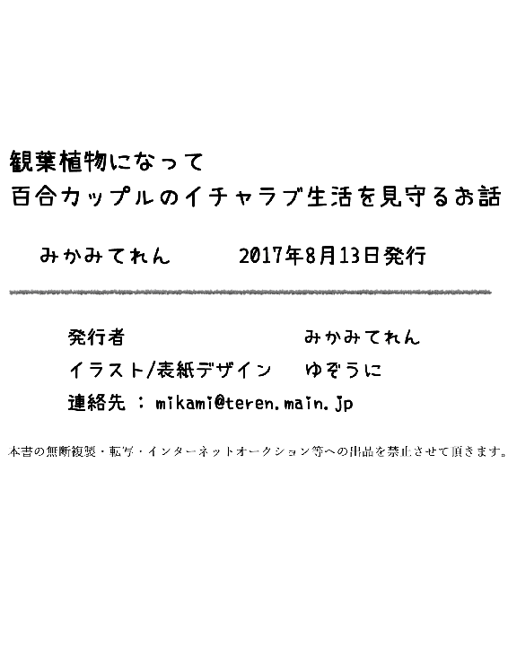

| 観葉植物になって百合カップルのイチャラブ生活を見守るお話 (みかみてれん文庫) | |
| みかみてれん | |
| てれたにあ (2017) | |
| Tags: | 百合, 家族 |
百合もの大好き女子高生、植田華はある日不慮の死を遂げる。だが目覚めた彼女は、妹の部屋にある観葉植物へと変わっていた! 小学生から大人になるまで、成長していく妹とその恋(百合)(尊い)を、植木鉢からじっと見守る、時に笑えて、時に切ない百合ラブストーリー!
観葉植物になって
百合カップルのイチャラブ生活を見守るお話
作 みかみ てれん
画 ゆぞうに
私は植田華、ごく普通のどこにでもいる女子高生。しいて言えば人よりちょっぴり女の子同士の恋愛――百合モノがガチで好きっていうぐらいかな！
そんないつもの冬の帰り道、きょうはちょっぴり嬉しいことがあった。
少し早く高校が終わって歩いていると、おてて繋いで帰る小学生女子のふたりを目撃したのだ。
はーかわいいなあ、小学生百合......。尊い......。
赤いランドセルがぴょこぴょこと揺れている。
ほんわかと後ろ姿を見守りながら、勝手に妄想する。
彼女たち、きっと小学生同士はなんの気もなく一緒に遊んでいるけど、中学生ぐらいでお互いを意識し始めて、紆余曲折ありつつも高校生で付き合い始め、そして最終的に渋谷区でゴールインするんだろうな。
いや、彼女たちが大人になるころにはきっと法整備も進んで、女性同士の結婚は当たり前のものとして社会に受け入れられているに違いない。
ううん、違いないだなんて、他人任せではだめ。
そのためには私が国会議員になって、少しでもこの国を百合に優しい国にするため邁進してゆかなくちゃ。植田華、そのために官僚を目指しています。
安心してね、小学生百合カップルちゃん。百合の未来は明るいよ。私がキミたちを守るからね！
そんなことを考えながら小学生カップルをガン見して歩いていた私は道端に『キケン！ 絶対入るな！』の看板とともにぽっかり開いていたマンホールに落ちて死んだ。享年十七歳であった。
国会議員を目指す夢はここに潰えたのだった。
だが――死んだはずの私はふと目覚めた。
なんだろう、なにかがおかしい。どうして自分には意識があるのだろう。落下した瞬間の恐怖映像もまだ頭にへばりついているというのに。
視界はぼんやりとしている。ここはどこかの部屋だろうか。自分の部屋ではないが、見覚えがある気がする。
ベッドに寝かされているわけではなさそうだ。全身の感覚がひどく曖昧だ。よっぽどの重傷だったのだろうか。
ん......？
誰かが部屋に入ってきた。女の子だ。
女の子はぽふんとベッドに倒れ込むと、めそめそとした声を漏らす。
「おねえちゃん......おねえちゃん......」
その声を聞いていると、なんだか胸を締めつけられるような気持ちがした。
なにか言葉をかけてあげたかったんだけど、急な眠気が襲ってきてしまった。とても起きていられない。
私は目を閉じた。まどろみの中に飲み込まれてゆく。次に起きたとき、あの小さな女の子が笑っていてくれればいいな、と願いながら。
夢の中で、私は泣いている少女を抱き締めていた。
私は無類の百合好きだが、私自身が女の子とどうこうしたいという気持ちは特にない。見ているのが好きなのだ。
それでも、この女の子に対して私は特別な気持ちを抱いていた。決してよこしまなものではなく、純粋に、どうにかして慰めてあげなきゃと思ったのだ。
泣いている女の子を見ると、私も悲しかった。どこまでも気持ちが沈んでゆく。
せめて女の子の悲しみを少しでも引き受けてあげたくて、頭を撫でる。
女の子は私を見上げて「おねえちゃん」とつぶやいた。
――おねえちゃん。
潤んだ瞳に自分の顔が映ったそのときだ。
私はすべて思い出した。
そして、また目を覚ます。
今度はこないだより鮮明に記憶が戻っていた。
ここは植田華の妹――植田葵の部屋だ。
どうりで見覚えがあると思った。隣の部屋じゃないか。しかしそれにしてはなぜ私は自分の部屋じゃなくて、葵ちゃんの部屋にいるのだろう？
答えはすぐに明らかになった。というか、目の前には姿見があって、それを見れば一目瞭然なのだ。
私は観葉植物になっていた。
......うん。
認めがたい状況ではあるが、事実だ。私は観葉植物になって、葵ちゃんの部屋にでーんと鎮座しているのである。
このベンジャミンバロックは、葵ちゃんの誕生日に私がインテリアグリーンとしてプレゼントしたものだ。お花より観葉植物を送るのは小学生にどうなんだろうと思ったが、葵ちゃん自身が「長くもつのがいい」と言ったのでこれにしたのだ。葉っぱがカールしててかわいいと喜んでくれた。
それにしてもなぜ私が観葉植物に......。
全身の感覚が曖昧なのもわかる。観葉植物だからだ。いったいどうやって周りの景色を見ているんだろう。観葉植物なのに。
ひょっとしてまだ人間の機能が残っているのでは？ そう思いしばらくがんばってみたが、やはり根がずぼっと持ち上がって歩き出せたりはしなかった。軽くホラーだしね......。
ゆっくりと階段をのぼってくる音がする。どうやら音や振動も感じられるようだ。トマトとかクラシックを聞かされて育つと甘い実が生るとか言うし、そういうことなんだろう。知らないけど。
ドアが開いた。ノックがないのでびっくりしてしまうが、現れたのは葵ちゃんだった。自分の部屋に帰ってくるのにわざわざノックなんてしないよね。
その後ろから姿を見せたお母さんは、心配そうな顔で。
「あーちゃん、無理して学校いかなくてもいいからね。しばらく休んでていいからね」
「うん」
葵ちゃんは火照った顔でうなずくと、緩慢な動作でパジャマに着替えて、ベッドに横になった。お母さんがポカリとお菓子を枕元に置く。
「少しずつでいいからね、少しずつで」
「......うん」
先ほどより小さい声でうなずく葵ちゃんの額を撫でて、お母さんが部屋を出てゆく。
葵ちゃんはぼーっとした顔で天井を見つめていた。
そういえば昔から、葵ちゃんは遠足の前とかに熱を出しちゃう子だった。たぶんストレスかなにかだろうけれど、最近ストレスを感じるようななにかがあったんだろうか。
考えを巡らせようとして、すぐに気づく。
もしかして......私がマンホールに落ちたこととなにか関係があるんだろうか......。
「おねえちゃん......」
肯定するかのように、葵ちゃんが涙声でつぶやく。
思わず背筋が（ないけど）ぞぞぞーっと寒くなってしまった。
そ、そうか......葵ちゃんはまだ小学五年生なのに、お姉ちゃんを事故で失ってしまったのか......。
か、かわいそう！ 葵ちゃんかわいそう！
だから学校も休んで、熱を出しながらずっとめそめそしているんだ......。
うう、ごめんよ、ごめんよ葵ちゃん......。
お姉ちゃんが小学生百合カップルに見とれて妄想の翼を羽ばたかせていなければ......。
だめだ、言い訳とかなにもできない。
今のお姉ちゃんにできることは、せめて部屋の二酸化炭素を吸って酸素を吐き出すことぐらいだ。私は勢いよく深呼吸を繰り返す。
すはーすはーと、元テニス部の肺活量を披露していると、葵ちゃんがふと起き上がった。
「そういえば、お水、あげなきゃ」
部屋に置いてあった水差しを取って、とてとてとこちらに向かってくる。
葵ちゃんは目が大きくて顔立ちの整った美少女だ。母似でどちらかというと愛嬌系（オブラートに包んだ表現）だった私に比べて、父似の葵ちゃんは将来美人に育つだろう。
引っ込み思案で人見知りで、私の後ろをお姉ちゃんお姉ちゃんと言ってついて回ってきた妹が傷ついているっていうのに、なにもしてあげられなくてなにが姉かー。
私は腕に渾身の力を込める。ふぬぬぬ。
せめてあの小さな体を抱き締めて、抱き締めてあげないと。ふぬぬぬ。
だめだ。葉っぱ一枚揺らすことさえできない。
こんなことなら葵ちゃんに食虫植物のハエトリグサとかをプレゼントすればよかった。目の前で葉をパタパタさせれば、なにか意思表示ができたかもしれないのに。葵ちゃんがギャン泣きして私が刈られる確率もうなぎのぼりだけど。
葵ちゃんは私（というか観葉植物）をじっと見つめている。今がチャンスとばかりに声を出すけれど、ベンジャミンバロックの葉っぱには音を奏でる器官はなかった。
水差しで水をかけられる。なんか体がひゃっとする。シャワーを浴びているような気分だが、同時にごくごくとおいしい水を飲んでる感覚もした。妙に気持ちがいい。
ハッ......私ってひょっとして裸なのでは......。観葉植物になっておいてなんだが、今、小学五年生の妹に裸にされて頭から水をかけられている......？
倒錯した気持ちになってきそう。
「ねえ、お姉ちゃん」
ドキッ！ とした。
もしかして葵ちゃんは、私が観葉植物になったことに気づいている――⁉
「お姉ちゃんがいなくなっちゃって、毎日寂しいよ......」
そんなはずはなかった。葵ちゃんはただ独白をしているだけだ。
うう、ごめんね......。
「どうしていなくなっちゃったの、お姉ちゃん......」
お姉ちゃんが小学生百合に見とれなければ......。
「いつも明るくて、楽しくて、美人で、かっこよくて......お姉ちゃんがいなくて、わたし、ひとりぼっちになっちゃうよ......」
えっ、それ誰のこと？ 私？ 私？
もしかして姉妹の禁断百合ップルのルートとかあったりした？ くそー！ もったいないことをしたー！ もうちょっと早く手を出していればー！
違う。私は当事者になるより見ているほうが好きなんだ。いや違う、そういう話でもない！ 不可思議な事態が続いて、私も混乱していた。
どうにかして葵ちゃんに元気になってほしい。そのためにできることはなにもないのか！ 見ているだけなんてつらい！
葵ちゃんにつられて私も泣いちゃいそうだ。
そんなとき、ピンポーンとチャイムが鳴った。葵ちゃんは気にせず私に水をくれていたが、部屋のドアがコンコンとノックされる。
お母さんが顔を出す。
「葵、お友達がプリント届けに来てくれたけれど、ちょっとだけ会わない？」
「......今、お水あげてて」
「来てくれたのは、千晴ちゃんよ」
「......」
葵ちゃんが返事をせずに俯いていると、お母さんは柔らかく微笑みながら「ちょっと待っててね」と部屋を出てゆく。
「ちーちゃん」と葵ちゃんはつぶやいた。
間もなく姿を見せたのは、ちょっと身長が高めの、ランドセルを背負った女の子だった。
ちーちゃんこと夏目千晴ちゃんは、私たちの幼馴染だ。家が近いこともあって、三人でしょっちゅう遊んでいたんだ。
体を動かすことが好きだった千晴ちゃんはよく私に競争を挑んできて、仲間はずれにされたくない葵ちゃんが追いかけてきて転ぶというのが、いつものパターンだった。
私が高校に入って土日も部活に熱中し始めてからは、なかなか時間を作れなかったけど、私たち三人はまるで姉妹みたいだった。
「これ、プリント」
「うん」
千晴ちゃんはぶっきらぼうにランドセルから出したプリントを差し出してきて、葵ちゃんが沈んだ顔で受け取る。
お互い、なにを言えばいいか迷っているようだった。
先に口を開いたのは、お誕生日が三ヶ月早いお姉さんの、千晴ちゃんだった。
「もう一週間も休んでるけど、体、大丈夫？」
「まだちょっと熱があるかな」
「じゃあ寝てなきゃだめじゃん」
千晴ちゃんはベッドを指差すが、観葉植物（私）のそばにぺたんと座った葵ちゃんは「うん」とまた俯いてしまった。
「葵がいないと、ガッコ、暇」
「......」
「ちょっとでいいから、来なよ」
ふさぎ込む葵ちゃんに、千晴ちゃんもこわばった顔をしていた。
わかる、わかるぞ。私には千晴ちゃんの気持ちが手に取るようにわかる。
きっと千晴ちゃんは、葵ちゃんを励ましに来てくれたのだ。
でもこんな経験ないから、なにを言えばいいかわからなくて、ついぶっきらぼうな言い方になってしまうのだ。
私は千晴ちゃんを応援している。
がんばれ。がんばれ千晴ちゃん。見ていることしかできない私の分まで。小学生には荷が重いかもしれないけど......！
「......葵」
しかし心がくじけてしまったか、千晴ちゃんまでうつむいてしまった。
すぐ近くにいるのに、どうすればいいのかわからない。そんな彼女の戸惑いともどかしさが、見ててつらい。
そこでふと気づいたように、千晴ちゃんが私を指差した。
「その観葉植物って、華ちゃんの？」
「うん」
そうです。今の私はどちらかというと華ちゃんってより草ちゃんだけどね。
「葉っぱがくるくるしてて、かわいいね」
「ね」
千晴ちゃんがツンツンと葉っぱをつつくと、葵ちゃんも同じように。
「なんか、華ちゃんに似てるかも」
「あっ......そうかも」
確かに私は癖毛で、髪がカールしていることが多い。何度か縮毛矯正をかけてみたけど、すぐ剥がれるのと値段がバカにならないので、もう諦めて短くしちゃっている。
でも私に似ているからという意図でベンジャミンバロックを送ったわけではない。そこまで自分大好き人間ではないのだ......。
「似てるね、お姉ちゃんに」
そう言った葵ちゃんは、くすっと小さな微笑みを漏らした。
お、おお......！
千晴ちゃんは葵ちゃんのすぐ近くにあぐらをかいて、手を差し出す。
「ね、あたしもお水あげていいかな」
「うん。お姉ちゃんもたぶん、喜ぶと思う」
もうすっかりお姉ちゃん扱いされているが、ホントにその通りなんでなにも言えない。
今度は千晴ちゃんからも水を注がれた。冷たくて気持ちいい。思わず腰が浮いて（ないけど）声が出ちゃいそうだ。こいつら十七歳のお姉ちゃんの躰を弄んでニコニコしてやがる。なんてひわいな小学五年生だ。
水差しを返した千晴ちゃんは、少しだけ躊躇した後、決意したような顔をした。
そうして、葵ちゃんの手を握る。
真剣な眼差しをして。
「あたしね、元気が出るおまじない、知ってるよ」
まさかと思う私。
それはかつて、小学校に入りたての千晴ちゃんが転んでアスファルトで膝小僧を豪快にすりむき、血をだらだら流して泣きじゃくっていた時、私が軽はずみにやってあげたやつではないだろうか。
覚えていたのか、千晴ちゃん。
......だとしたら、この先に待ち受けているのは。
葵ちゃんは子犬のような無垢な瞳で首を傾げた。
「......そんなの、あるの？」
「ああ。他に人にはできないけど、葵にならかけてあげられるやつ。してほしい？」
「うん」
「......だったら、目をつむってて」
葵ちゃんは相手を信じ切ったような顔で目を瞑る。
対して千晴ちゃんは、思いつめたように唇を結んでいた。
だが、えいと勇気を出して顔を動かす。
千晴ちゃんが葵ちゃんの額に、ちゅっ、と唇を触れさせたのだ。
小学生百合だ......。
葵ちゃんは驚いた風に額を両手で隠す。その顔が赤くなっている。
キスしたほうの千晴ちゃんもまた、目を逸らして頬を染めていた。
尊い。
まるで永遠を誓い合うように、千晴ちゃんは勇気を出して言う。
「あのさ、大丈夫だから、葵。あたしはずっと、葵のそばにいるから」
「......ちーちゃん、それって」
純真な目に見つめられた千晴ちゃんは、わたわたしながらも。
「別に、変な意味じゃなくて......その、ほら、葵は人見知りだから、知ってる人がそばにいないと、すぐ泣いちゃうでしょ？ だから、これからはあたしが華ちゃんの番までさ
......葵のそばに、いるから......」
すごいイケメンだ。抱かれたい。
その愛の告白みたいな台詞を、葵ちゃんはしばらくぽーっとした顔で受け止めていた。
しかし今度のそれは決して気まずい沈黙ではなく、
「ってごめん、葵、熱あるのに変なこと言って」
「ううん、うれしい」
沈み込んでいた葵ちゃんの笑顔が、静かに咲く。
それは雲の切れ間から差し込む光のようだった。
葵ちゃんははにかむと、両手でぎゅっと千晴ちゃんの手を握る。
「ちーちゃん、ずっと、ずっと一緒にいてね。ちーちゃんまでいなくなっちゃったら、いやだよ」
「もちろんだよ。葵をひとりにしたら、いつ熱出すかわかったもんじゃないし。あたしだって心配で仕方ないから」
「ありがとう、ちーちゃん......」
ふたりはしばらく手を握り合っていた。
葵ちゃんはニコニコとしていたが、千晴ちゃんは終始恥ずかしそうだった。
帰るときも、千晴ちゃんだけはまるで男の子みたいに照れながら出ていく。
はー。
この感情が愛情なのか友情なのか、私にはわからないけれど、でも少なからず千晴ちゃんは葵ちゃんに特別な想いを抱いていることは間違いなさそうだ。
にしても知らなかった。千晴ちゃんが葵ちゃんのことをそんな風に思っていたなんて、まったく気づかなかった。
あの年頃の子って、年上のおねーさんに憧れるもので、つまり私のことが気になっちゃうのが相場だろうに......。私はどこまでいっても傍観者......。
いやいや、いいじゃないか。だからこそ、葵ちゃんは元気になったんだ。自分がひとりぼっちじゃないって、言葉だけじゃなくて実感できたんだ。それはすべて千晴ちゃんのおかげだ。
私が言うのもなんだけど、いつまでもいなくなった人に囚われていないで、前を向いて歩いてもらえたらいいな、と思う。
そしてそれは、私も同じことで。
国会議員の道は閉ざされてしまったけれど、これはこれは悪くない第二の人生（植物生？）なのかもしれない。
私もこれからは観葉植物として葵ちゃんの暮らしをおはようからおやすみまで見守ることにするよ。
この特等席で、たんまりと小学生百合をね！
葵ちゃんは翌日から学校に通い出した。
まだ時折、遠くを見つめながら寂しそうな顔をすることはあるが、熱はすっかり下がったみたいだ。
よかったよかった。
また、私がいなくなったからか、葵ちゃんと千晴ちゃんは部屋で遊ぶことが多くなった。葵ちゃんがお外で遊ぶのが得意じゃないから、千晴ちゃんが合わせてあげているんだろう。優しい。尊い。
私がいなくなり、二週間ほど経ったある日。
きょうはふたりで手芸だ。ひもを通してきんちゃく袋を作っているみたい。
「葵はこういうのうまいよね......」
「そかな」
「あたし、縫ったり編んだりとか、全然ダメ。なんか針とかこわい」
ばたんと後ろにひっくり返る千晴ちゃん。わかるよ、その気持ち。私もお裁縫の宿題はだいたいお母さんにやってもらっていた。
一方で、葵ちゃんは黙々と針を通し続けている。
葵ちゃんはこういう地味な作業が好きだ。お母さんの読んでいた雑誌についているクロスワードパズルを解いたり、ゲームのレベル上げばっかりずっとやっていたりする。
ちっちゃい小学生がちまちまと作業に没頭しているのは、なんだか見てて可愛らしいものがある。でも私がちょっかい出すと「もー」って怒られるんだ。私はどうしようもない姉でした。
で、いい加減、千晴ちゃんも飽きてきたみたいで。
「ねえ、葵。違うことやろうよ」
「いいけど、なにー？」
「んー」
作業がひと段落ついたようだ。裁縫箱に道具をしまってゆく葵ちゃんに、同じくお片付けを済ませた千晴ちゃんはうなる。
「葵ってさ」
「うん」
「クラスに好きな男子とかいないの？」
「ええっ」
急な話題の転換に葵ちゃんは驚いて、サラサラの黒髪をぷるぷると揺らした。
「いないよいないよ、わたしはまだそういうの早いもん、いないよ」
「焦ると怪しいって思っちゃうよね」
わかる。
「いないってば、いないってば」
葵ちゃんは念を押すように繰り返した。
「仲いい男の子もいないし、話したこともないよ」
「いいなって思う人も？」
「うん」
こくんとうなずく。
どうして急にこんなことを聞いてきたのか、葵ちゃんにはわからないようで、ちょっと嫌そうな顔をしていた。まあ、この調子なら本当に好きな人はいないのだろう。
そこでいったん追及が途切れると、葵ちゃんは立ち上がる。
「ちょっとトイレいってくるね」
「あーい」
葵ちゃんが席を立つやいなや。
千晴ちゃんは線が切れたかのように、ぷはーとため息をついた。
「なんでこんなに緊張するんだろ......」
髪をかきあげる千晴ちゃんの頬が赤く染まっている。
せわしなく室内を見回していた千晴ちゃんの視線は、やがて私の前で止まった。
「華ちゃん......あたしって、おかしいのかな」
なにがだい、悩める少女よ。
この私が葉脈の隅々まで聞いてあげようじゃないか。
「なんかあたし、最近変なんだ。華ちゃんがいなくなってから、寂しい寂しいって泣いていた葵を見てさ、胸がキューッとなっちゃってさ」
うんうん。
ズバリ言うとね、それは恋だよ。
「葵が体育を違う班で受けてたりすると、妙に落ち着かない気分になって、今なにしてるんだろ、とか、葵大丈夫かな、とか、そんなことばっかり考えちゃうんだ」
わかる。それは恋だ。
小学生百合ップルの誕生を私は祝福したい。
千晴ちゃんは悔しそうに奥歯を噛む。
「......ホントに華ちゃんが生きてたら、こんなことにはならなかったのに......どうして」
ご、ごめんなさい。腑抜けたことを考えていた私の頭に冷水を浴びせられた気分だ。
いやホント、小学生百合ップルに見とれててごめんなさい......。
「はー、どうしてなのかなあ......落ち込んだ葵の姿を見てらんなくて、ずっとこれから先も泣いたり悲しんだりしなければいいな、って思っちゃって......それで......」
千晴ちゃんは言葉を探してさまよっているようだ。
「あたし、ひょっとして葵のこと......」
ごくり。生唾を飲み込みながら、千晴ちゃんの次の言葉を待つ。
彼女は天井を見上げながら、ぽつりとつぶやいた。
「妹、みたいに......思っているのかな」
私は自分が観葉植物だということも忘れてズッコケそうになった。
そうか、妹みたいに、か......。
しかし女の子は納得したのか、徐々に顔を引き締めてゆく。
「そっか......華ちゃんがいなくなった分まで、あたしがお姉ちゃんにならなきゃって思って、それで葵のことが心配なんだな......なるほど、そっかそっか！ わかったよ華ちゃん、ありがとう！」
屈託なく笑って葉っぱをチョコンと人差し指でつついてくる。
いや、キミ、お姉ちゃんは妹のおでこにキスとかしたりしないと思うけど......。
それを言ったら千晴ちゃんのアレにアレした私も大概だけど、あのときは私もテンパってたから他になにも思いつかなかったんだ。
と、ちょっとの懺悔が終わり、席を外した葵ちゃんが戻ってくる。
「ただいまー。ちーちゃん、お電話とかしてた？ 話し声が聞こえてきたけど」
「ああ、ちょっと華ちゃんに相談をさ」
「え、お姉ちゃん？」
葵ちゃんもちらりと観葉植物を見る。この部屋で華と言ったらもはやこの観葉植物のようだ。いつか恋人ができたときに「姉です」と紹介されたりしないだろうかとドキドキする。
千晴ちゃんは葵ちゃんの手を握り、たぐり寄せる。
きょとんとしていた葵ちゃんは、されるがままに千晴ちゃんの体に背を預けた。
「あたしさ、葵のことを本当の妹みたいに思っているから」
「う、うん......そうなの？」
ぎゅっと葵ちゃんの頭を抱きしめ、千晴ちゃんは彼女に改めて言い聞かせる。
「だから葵も、つらいこととか、嫌なことがあったら、なんでもあたしに言ってね。華ちゃんの分まで、あたしががんばるから」
「うん......」
しかし葵ちゃんは、そんな千晴ちゃんの頬に手を当てた。
「......でもそれは、千晴ちゃんもだよ？」
「え？ あたし？」
葵は微笑みながら振り向き、千晴ちゃんの前髪をそっと撫でる。
「ちーちゃんだって、お姉ちゃんがいなくなってすごく寂しいの、知ってるんだから。だから、お互い様。わたしだってお姉ちゃんの代わり、するからね」
「それは」
千晴ちゃんは首を横に振った。
「別に、葵にしてもらうこととか......」
「少なくともお裁縫だったら、わたしのほうが上手だもん」
机の上に放りっぱなしだったら千晴ちゃんの巾着袋を広げる。千晴ちゃんは「うっ」という顔になったあと、小さく笑った。
「ま、でも確かにそっか。じゃあふたりで華ちゃんを分担しようか、葵お姉ちゃん」
「うん、わたしもがんばるから、千晴お姉ちゃん」
ふたりは笑い合いながら、猫の姉妹みたいに身をすり寄せていた。
互いの恋愛感情こそなかったが（正直千晴ちゃんは妖しいと思っているが）なんだかすごく尊い光景であった。
私は思わず両手を合わせて拝む。ありがたやありがたや......。
こんな光景を盗み見できるのも、すべて私が死んだおかげだ。ありがとう植田華。キミの死はふたりの少女の結びつきを強固なものにするための接着剤だったんだね......。植田華、キミはそのために生きていたんだね......。
今年の冬は長く続いた。
観葉植物を枯れさせないように、いつも暖房を入れてもらっているの、なんか申し訳ないです。せめてがんばって空気を綺麗にしようと思います。
冬の間、葵ちゃんが熱を出すと、決まって千晴ちゃんはお見舞いに来てくれた。
「ごめんね、ちーちゃん」
「まったく葵はホントに体が弱いんだから。プリント、机の上に置いとくよ」
「ありがと......」
マフラーをほどいてランドセルを置いた千晴ちゃんは、むくれたような顔をしていた。もう何度もデコチューしているのに、いまだに照れているのだ。
ベッドに横になっている葵ちゃんに近づく。
その手をキュッと握り。
「......あと、またおまじない」
「うん」
汗で濡れた葵ちゃんの額に、小さな唇を押しつけた。
その光景の美しさに、思わず私は涙する。観葉植物冥利に尽きるわ。
「具合、よくなれよ」
「えへへ......ありがと......」
にへらと笑った葵ちゃんを見て、千晴ちゃんが口を尖らせたまま頬を赤らめる。
離れ際、もう一度おでこにキスをした。
ちゅっ、と潤んだ音が鳴る。
葵ちゃんは迷惑をかけていることを気にしている顔で。
「ちーちゃんが熱出したら、わたしがおまじない、してあげるね」
「えっ、いいよそれは。......恥ずかしいし」
ぱちくりと瞬きをする葵ちゃん。
「恥ずかしいこと、してたの？」
「あっ、いや、違う、それは違うんだけど！」
墓穴を掘った千晴ちゃんは途端に慌て出した。
葵ちゃんは毛布を口元までかぶる。
「恥ずかしいんだ、これ......やっぱり、友達同士でもしないよね......」
「いやいや、するし。ぜんぜん、余裕で、誰とでも」
じーっと見つめられて、千晴ちゃんは目を逸らす。
「まあ、あんまり、しないかな」
そのこめかみから汗がたらりと流れる。どっちが熱出しているかわからない顔色だ。
こほんと咳払いをして、千晴ちゃんはじっと葵ちゃんを見つめる。
「しないよ。あたしだって、こんなことするの葵にだけだ」
葵ちゃんは相好を崩す。
「そっかあ。なんだか嬉しい。ほんとにね、ちょっと気分がよくなってくるんだ。ちーちゃんの唇、やわらかくてきもちいいよ」
すごい大胆なことを口走ると、千晴ちゃんは軽くのけぞった。
「気持ちいいって、お前......」
「うん？」
葵ちゃんはハテナマークを浮かべている。自分がおかしなことを口に出した自覚はないようだ。
これが精神年齢の差......！
千晴ちゃんは葵ちゃんの唇に人差し指を当てる。
「......あんまり外ではそういうこと言うなよ。恥ずかしいから」
「うん、ふたりだけのヒミツだね」
「そうだよ、ヒミツだ。約束守れてたら、またしてあげるからさ」
「熱出すのが楽しみになっちゃったら、どうしよ」
「おいおい......」
いたずらっぽく笑う葵ちゃんの頭をつついて、千晴ちゃんも頬を緩めた。
その後、葵ちゃんは月に一度は熱を出し、そのたびに見舞いに来た千晴ちゃんが額にキスをした。
その蜜月を一番近くで見ていた私は、あまりにも神聖な光景に輪廻転生の輪を外れて解脱してしまいそうだったが、これからも葵ちゃんを見守るんだという鋼鉄の精神力で耐えた。私だけの百合部屋を手放すわけにはいかないのだった。
六年生になって、葵ちゃんの悲しみも砂浜の文字が波で消えるように過ぎ去っていったかな、と思えた頃。
千晴ちゃんは珍しくもうひとりの女の子を連れてきた。
この子がまつげバッチリでおめめぱっちりの清楚な美少女お嬢様といった感じで、私はちょっぴりドキドキしてしまった。
同じ部屋にタイプの違う三人の美少女が揃っているこの状況。美少女の放つ光で光合成が捗るわ......。
「あ、これが話してたベンジャミンバロックですか？」
美少女の顔が近くで私を見つめる。ひい、美少女の吐き出す二酸化炭素だ。余すところなくデンプンに変えなければ。ありがとうございます。ありがとうございます。
「うん、お姉ちゃんのくれた観葉植物で、お姉ちゃんに似てるんだよ」
「それはそれは......初めまして、水原泉美です。葵さんのクラスメイトで、いつも仲良くしていただいています」
これはこれはご丁寧にどうも。
植田華です。マンホールに落ちて観葉植物のベンジャミンバロックやってます。
横で千晴ちゃんがびっくりしていた。
「すごいな、泉美。まるで大人みたいな挨拶だね」
「いつもお母さんにキチンとしなさいって言われているんです」
泉美ちゃんは上品に微笑んだ。本当に小学六年生かこの子。ロリコンの作り出した空想上のロリお嬢様じゃないのか。
幸いなことに実在しているらしく、泉美ちゃんたち三人はランドセルからそれぞれ勉強道具を広げた。
小学生にしては発育のいい千晴ちゃんと、佇まいが小学生のくせに落ち着きすぎている泉美ちゃんの間に挟まれると、うちの葵がいかに平凡な小学生かわかる。平凡な葵ちゃんかわいい。
「お姉ちゃん、泉美ちゃんはわたしと同じ塾に通っててね、それにクラスで一番かわいいんだよ。男子にも女子にも人気があって、いろんなこと知ってて、すごいんだから」
ニコニコと自慢げに告げてくる葵ちゃんに、泉美ちゃんは困ったように微笑む。
「いや、一番かどうかは......」
と千晴ちゃんはそっぽを向きながら頬を赤らめてつぶやく。
お前、絶対に葵に惚れてるだろ。私の目はごまかせんぞ。
「葵さんだってこないだ塾で......」
「わっ、ちょっ、だめだって！」
葵ちゃんが泉美ちゃんの口を塞ぎに身を乗り出す。
「こないだなんかあったのか？」
「そうなんですよ。塾の男子からお手紙もらってたんです。ねー」
「それ千晴ちゃんには絶対言わないでって言ったのに～！」
「私はお姉さまにご報告したんですよ。安心してくださいお姉さま、葵さんは日々美しく成長してますよ、って」
泉美ちゃんはすまし顔で言う。
そうか、葵......。私もなんとなくショックを受けてしまった。
お前もう男子に告白されるまで......。私も自分の人生で浮いた話はなにひとつなかったのに......。今時の小学生は進んでるんだな......。
そしてわたし並に衝撃を受けているのは当然、千晴ちゃんだ。
「マジかよー......葵、お前、お前......」
「ただ『今度遊ぼうね』って誘われただけだもんっ」
「女子連絡網では、葵さんこそ真の男子人気ナンバーワンと呼ばれているんですよ」
「うそだ～！」
「あたし男子とばっかりドッジボールやってるのに、なんにも知らなかった......」
「だって葵さん、かわいいじゃないですか。ねー」
「絶対そんなことないって～！」
泉美ちゃんが葵ちゃんを抱き寄せて、頭を撫でる。まるで犬みたいな扱われ方だ。
「学校では千晴お姉ちゃんがいるからみんな遠慮しているんですよ」
泉美ちゃんは意味深な視線を千晴ちゃんに送る。千晴ちゃんは彼女の腕から葵ちゃんを奪い返す。
「当たり前でしょ。あたしは華ちゃんの代わりに葵を守る仕事があるの」
「わたしだって千晴ちゃんのお姉ちゃんなのに～」
葵ちゃんの叫びは黙殺された。
千晴ちゃんは葵ちゃんの頬を撫でながら、その瞳を見つめる。
「なんで隠してたんだよ、葵」
まるで浮気を突き止めた現場のようだ。
葵ちゃんはわたわたとしながら。
「だ、だって......恥ずかしかったんだもん......」
顔を真っ赤にしながら言った。千晴ちゃんはあくまでも真剣な目をしている。
その圧力にたじろいだ葵は、逃げ場を探すように辺りを見回して。
「あ、あの、わたし！ お母さんにジュース出すから手伝えって言われてて、下行ってくるね！」
腕を逃れるように、葵ちゃんは退席していった。
うちの妹はチキンです。
はー、と千晴ちゃんは机に突っ伏す。
「やっぱ、あたしも塾通うかなー......でもなー、勉強めんどくさいよなあ......」
「お友達が増えるのは嬉しいことです」
あくまでもニコニコしている泉美ちゃんを横目に、千晴ちゃんはうめく。
「なあ、泉美の目から見てあたしって、やっぱり過保護かな」
「だいぶ。私もお話できたの塾でしたし。でも、自分が一番の友達なんだからーって主張する子は千晴さんに限ったことではないのでは？ クラスにもけっこういますよ」
「でもそれって葵のためにならないよね」
「それは......わかりませんけど」
泉美ちゃんも困ったように眉を寄せる。
こいつら大人な話しているな......。
うちの葵が平均年齢を引き下げている気がしてきた。
千晴ちゃんは机に寄りかかりながら、髪をかきあげる。
「葵って体が弱くてさ、すぐ熱出してたんだよ。最近じゃあんまりないけど、でもあいつさ、熱出たとき誰にも言わないで黙ってるんだよね。ひとりで黙ってて、家に帰ってからバターンって倒れるんだ。なんで隠してたんだよって言っても、『恥ずかしいから』って」
「保健室いったりすると、みんなから注目浴びちゃいますもんね」
「でもそういうときさ、華ちゃんがいるとすごいんだよ。見ただけで『熱出そうだからおうちで遊ぼう』とか、『きょう学校でもしかしたら葵ちゃんが熱出すかもしれないから、見ててもらってもいい？』とか言って、ホントにその通りになってさ。華ちゃん、葵のことなんでもわかってたんだ」
「素敵なお姉さまだったんですね」
いや、それはただの年の功というか、経験則というか......。同じことを小学五年生に要求するのは酷だと思います......。
なんか私の思い出が、すごい美化されてる気がしてきた。
「だから今度はあたしが華ちゃんの代わりにならないといけないのに......。あたしには葵のことわからなくてさ、だからむやみやたらとあいつをガードしてるんだと思う。いつ熱出すか不安だから」
「千晴さんのお気持ち、よくわかりました」
小学生らしからぬ相槌を打つ泉美ちゃんは、そんな千晴ちゃんに微笑みかける。
「千晴さんは、葵さんがとても大切なんですね」
「わかんない。もしそうだったら、葵のためになにかしてあげないとホントはいけないんだよ。あたしのためじゃなくてさ」
「わかってます。すべてを。私は」
泉美ちゃんは菩薩のようにうなずいた。
「千晴さんは、葵さんのことが好きなんですね」
えっ⁉ 直球すぎない⁉
なんだこの小学六年生......核弾頭かなんかか......。
千晴ちゃんもぽかーんとしている。
「好き、好きって......」
「もちろん友達としての好きではなくて、恋人の好きですよ！」
「えっ⁉」
マジか。言い切った。
顔を真っ赤にする千晴ちゃんと対照的に、泉美ちゃんは目をキラキラさせている。
この年で、女子と女子との恋愛をここまで素直に受け入れられるなんて......。泉美ちゃんはまさか......あたしの同族⁉
さすがに普通の女の子の神経をもつ千晴ちゃんは、拒否感を示した。
「あたしが葵を好きって......そんなのヘンでしょ、女の子同士なのに。なに言ってんだよ、泉美」
「果たしてそうでしょうか？ 千晴さんは確かに限りなく男子に近い思考回路ではありますが、でも女の子同士で恋愛をするのはなにもおかしなことじゃないんですよ」
なにげにひどいこと言っているな、泉美ちゃん。
だが千晴ちゃんはすがるように彼女を見て。
「......そう、なのか？」
「ええ、ええ、もちろんです。そういう女の子同士の恋愛を描いた本を『百合』っていうんですけど、世の中には百合の本がたくさんあるんですよ。あ、よかったらこれ読んでみてください、どうぞどうぞ」
と鞄から泉美ちゃんは一冊の本を取り出した。小説だ。マリみてだった。なぜ常に持ち歩いているのか。
泉美ちゃんの勢いに押し切られつつ、千晴ちゃんは受け取った。
「う、うん......こういう文字ばっかりの本って読んだことないけど、ありがとう」
「ぜひ感想を聞かせてくださいね。私ずっと前から千晴さんにはこういう適性があるって思ってて、渡すチャンスを狙ってたんです」
「なんだよそれ......意味わからない......」
小学校からの英才教育が始まろうとしている......！
「じゃなくて、別にあたしは葵のこと妹としか思ってないから」
えー、ほんとにー？
「えー、ホントにですかー？」
私と泉美ちゃんがシンクロした。
「なんだよその言い方。その目、その口」
泉美ちゃんの頬を引っ張る千晴ちゃん。「ひゃめてー」とやられながらも泉美ちゃんは楽しそうだ。
そうしているうちにドアがノックされた。千晴ちゃんが開くと、お盆を抱えた葵ちゃんが戻ってきた。コップが三つに、チョコ菓子が乗っている。
「遅くなってごめんねー」
葵ちゃんはそもそもなんで逃げ出したのかも覚えていないような顔をしていた。お盆もってこんなにジュース運べるわたしすごいでしょ！ って顔だ。
「大丈夫、こっちも話が終わったところだ」
千晴ちゃんは振り返り、泉美ちゃんを見て目を吊り上げた。
「お前、もし可能性の話だったとしても、絶対に葵には言うなよ。葵を困っちまうからな」
「それは千晴さんのこれからの態度次第ですね」
「んだと......」
睨む千晴ちゃんを見て、葵ちゃんはオロオロし出す。オロオロする葵ちゃんかわいい。
「さっきの本、ちゃんと読んでくださいね。そうしたら黙ってます」
「お前......わーったよ、読むよ、ちゃんと読むってば」
「な、なんの話？」
『......』
じっと見つめられ、葵はうっと後ずさりする。
千晴ちゃんが先に目を逸らす。
「ナイショ」
「......内緒なの？」
「ナイショだよ、ナイショ。そんな顔するなよ。ったく、葵だって男子のこと黙っていたんだから、お互い様だろ」
ぶっきらぼうに言い放つが、その頬が赤く染まっているのを私と泉美ちゃんはバッチリと目撃していた。
そこで葵ちゃんはなにかを察したように、黙り込んだ。
なんだか嬉しそうに微笑む。
「そっか、千晴ちゃんにも恥ずかしいこと、あるんだ」
「おま――」
千晴ちゃんの顔が真っ赤になる。
「違うし！ 恥ずかしくなんてないっての！」
次に葵ちゃんが体調を崩したのは、五月のことだった。毎月一回のペースである。
見舞いに来たのは、千晴ちゃんと泉美ちゃん。
念入りにストーブが焚かれた部屋で、泉美ちゃんがプリントを机の上に置く。
千晴ちゃんはなぜだかむすっとした顔で座っていた。
「あたしひとりでいいって言ったのに、なんで泉美も来るんだよ」
「それは私が信頼厚いクラス委員長だからですね。先生にもよろしくって頼まれちゃいましたし」
「いつもはあたしが届けているんだよ。家だって近い。お前の家は反対側だろ」
「でも私、葵さんのこと好きですし。ねー」
葵ちゃんは赤ら顔で、ねー、と微笑んでから、コホコホと咳をした。それから心配そうにふたりを見て。
「わたしは、ちーちゃんと泉美ちゃんがきてくれて、すっごく嬉しいよ」
ふたりの仲があんまりよろしくなさげなので、不安がっているのだろう。
泉美ちゃんが咎めるように千晴ちゃんを見る。千晴ちゃんはうっとうめいた。
「あのな......あたしだって......」
「どうしたの？」
「......なんでもない」
千晴ちゃんはむくれて立ち上がる。
「あたし、先に帰るから。ちゃんと寝てろよ、葵」
「あっ、ちーちゃん」
バタン、とドアが閉められる。
泉美ちゃんは、あちゃーという顔をしていた。
「なんか、まずいことしちゃいましたかね」
きっと千晴ちゃんは葵ちゃんのお見舞いに特別な意味を抱いているんだろう。
だからそれを邪魔されて、拗ねてしまったのだ。
この辺り、まだまだ小学生なんだなあという気になって私は微笑ましいけれど、残された葵ちゃんはしょんぼりモードだ。
「えっと、ごめんなさい」
事情がわからないなりにも、泉美ちゃんは頭を下げた。
「お邪魔する気はなかったんです。空気読めてなくてごめんなさい。私も帰りますね」
「ううん、泉美ちゃんは悪くないよ。たぶんちーちゃんも、学校で嫌なことがあったんだよ。ごめんね、また来てね」
「はい、ありがとうございます。また来ます」
泉美ちゃんもぎくしゃくと帰っていった。
はふぅ、と葵ちゃんはベッドに転がる。
「どうしたんだろ、ちーちゃん......」
小学生ながら、乙女心は複雑ってことだね。
だが泉美ちゃんが帰った後だ。一度家に帰ったはずの千晴ちゃんがまた戻ってきた。
「あ、ちーちゃん」
「さっきはごめん」
葵ちゃんがなにかを言う前に千晴ちゃんが謝った、
「なんか、急にむしゃくしゃして。悪いのはあたしだ。ぶってくれてもいい」
「ええっ、そんなのできないよ」
千晴ちゃんは固い顔で葵ちゃんの手を握ると、そうして自分の頬をぺちっと叩いた。
「明日、泉美にも謝らないとな」
ちゃんと謝れる千晴ちゃんはいい子。
「よくわかんないよ。どうしたの、ちーちゃん。お腹痛かったの？」
「......違う。ただ、なんか......あいつが変な本を貸すからだ」
悔しそうでも、怒っているわけでもなく、千晴ちゃんの顔は赤かった。
声をかけず、葵ちゃんはそんな千晴ちゃんをぼうっと見つめている。
しばらく、部屋の中には時計の針の音だけが響く。
「おまじない」
ぽつりと葵ちゃんがつぶやいた。
「きょうは、しないの？」
「......」
千晴ちゃんは葵ちゃんの頬に手を当てる。
だけど、そこで止まった。
いつになく緊張した顔の千晴ちゃんは、葵ちゃんの目を見ようとしなかった。いや、見れないのかもしれない。
以前にお見舞いに来たときと今の千晴ちゃん、なにが変わったか。
百合教育を受けたか、受けていないかだ。
千晴ちゃんの唇が震える。
「......するよ、おまじない。目、つむってて」
「うん」
葵ちゃんは眠り姫のように目を閉じた。
千晴ちゃんは息さえも止めて、ゆっくりと顔を近づけてゆく。それは額ではなく、もう少し下の方で......。
ちゅっ、と軽く音を立てて、千晴ちゃんは葵ちゃんの唇にキスをした。
――――と声にならない声が私の口から漏れたというか私にはそもそも口がなかった。
あ......と声を漏らしたのは、葵ちゃん。
ふたりはしばらく見つめ合う。
千晴ちゃんが恥ずかしさに耐えきれずといった風に、先に目を逸らした。
「......これも、おまじない？」
「これは」
千晴ちゃんの言葉が途切れる。
まるで泣き出しそうな顔で。
「おまじないだよ、これも」
「そうなんだ」
「額にするより、効果が高い」
「でもお口にすると、うつっちゃわないかな」
「葵のは風邪とかじゃなくて、気持ちの問題だから」
「そっかぁ......」
千晴ちゃんの表情にも気づかず、葵ちゃんは申し訳なさそうに微笑む。
「ごめんね、いつも迷惑かけて。わたし、もっとちゃんとするから。ちーちゃんに心配かけないように、強くなるから」
「別に、葵は今のままでも......」
「がんばるね」
「......うん、がんばれ」
きょうのおまじないはその一回で、千晴ちゃんは最後までほっぺを桜色に染めながら出ていった。
まるで止まっていた心臓を動かすように。
ひとりになった葵ちゃんは、ふーっと大きく息をつく。
「おまじない......なんだよね？」
正解を尋ねても、もう部屋には誰もいない。
戸惑うように、そっと唇を撫でて。
「......なんか、すっごくドキドキしちゃった、かも......」
あのお子様な葵ちゃんにも、今のおまじないは強烈な印象を与えたようだ。
ってか、私もドキドキした......。ふたりだけの世界を覗いてしまった......。
小学生同士が――しかもそのうちのひとりは実の妹が――ちゅーする場面をこんな至近距離から盗み見るだなんて......。とてもいけないことをした気分だ。
観葉植物にでもなっていなければ、一生お目にかかる機会はなかっただろう。
葵ちゃんは熱っぽいため息をついて、しばらく眠れなさそうに身をよじっていたが、明日には元気になって学校へ向かった。
翌日、教室で顔を合わせた葵ちゃんと千晴ちゃんがどんな会話を交わしたのか、鉢植えに根を生やした私は想像するしかないのだった。
その後も泉美ちゃんはちょくちょく遊びに来て、ふたりの仲を引っかき回していった。
千晴ちゃんとはたまに言い争うときもあったが、この年頃の子は仲直りも早く、今ではもう――。
「......おい、次の巻はいい加減、いつになったらもってくるんだよ」
「あ、ごめんなさい、きょうも忘れましたー」
「わざとだろ。わざとレイニーブルーで止めてるんだろ泉美。なあ」
「千晴さんにもこのハラハラを味わってほしくて」
悪びれずに舌を出す泉美ちゃんに、千晴ちゃんは「まったく......」とうめく。
受け渡しはなぜかいつも葵ちゃんの部屋で、そして葵ちゃんがちょっと席を外している間に行われていた。まるで旦那さんのいない間に不倫する人妻百合......。
続刊を読み進めてくれていることが嬉しいのか、泉美ちゃんはウキウキと千晴ちゃんの腕を引っ張る。
「でも、どうです？ 面白いですよね？ ドキドキしません？」
千晴ちゃんはうっとうしそうに泉美ちゃんの腕を振りほどきつつ。
「百合ってのはよくわかんないけど......でも、カッコイイ先輩に憧れる気持ちは、なんとなく伝わったよ。でも別にこういうの、恋愛感情とかじゃないだろ」
そう言う千晴ちゃんの耳が赤く染まっているのを、私は見逃さなかった。
初ちゅーまでしておいてなにを言っているんだこの子は！
その事実は知らないだろうけど、読んで楽しんでくれていることはわかっているのか、泉美ちゃんはいたずら好きの猫みたく微笑む。
「千晴さんが気に入ってくれて嬉しいです。ではこちらが続きの」
「あるんじゃないかよ！」
鞄から出した文庫本を、ひったくるようにして受け取る。
「それにしても、何冊あるんだ......」
「もうちょっとですよ、もうちょっと」
こうして千晴ちゃんは、小学校六年生の一年間で、マリみてを全巻読破した。
最後のほうになると「脅されているなら仕方ないよな」と自分に言い聞かせつつも、本を借りるとき嬉しそうにしていたり。
他のクラスメイトが遊びに来るときもあったが、それでも葵ちゃんと千晴ちゃんと泉美ちゃん、三人の関係はどことなく特別なものに見えた。
唇への『おまじない』は、ただ一度だけのことだったけれど、それ以降も熱を出すたびに千晴ちゃんは葵ちゃんの額に口付けて。
しかし、葵ちゃんの体が成長し、大人になり、丈夫になってゆくにつれ、その頻度は徐々に減っていった。
それはきっと、いいことなのだろう。
育ってゆく幼い百合の蕾を愛でるように、私は彼女たちを見守る。
こんなに幸せな光景を目にすることができるなんて、観葉植物冥利に尽きる......。
そして、三人はちょっとずつ大人になり。
物語は次のステージに向かうのだった。
「ただいま、お姉ちゃん」
葵ちゃんがスクールバッグを鞄掛けに預け、こちらに向かってくる。
「今、お水あげるからね」
葵ちゃんは中学生になった。
髪を伸ばした彼女は、寸胴だった体型もわずか一年でグッと大人に近づき、親戚のおじちゃんでも気軽に頭を撫でるのはためらわれるような、きれいな少女に育った。中学校の制服効果かもしれない。若い子が着る制服は常にかわいい。うん。
このままなら、あと数年後には非の打ち所がない美少女になるだろう。楽しみだ。どうか小学生百合ップルに見とれてマンホールに落ちるなんて、ほんとしょーもない死に方はしないでほしい。
ともあれ、妹の成長を一番間近で観察することができる私は、なんて幸せなんだろうか！
しかも私はそんな妹から愛されているのだ。
頭から水差しのシャワーを浴びて、身も心もトロトロにされてしまう。
「どう？ きもちいい？」
ああー、生き返るー。
葵ちゃんの微笑みは天使のようだ。
小学校からの仲良し三人組は全員同じ中学校に進学した。千晴ちゃんは陸上部に入って、葵ちゃんは手芸部。泉美ちゃんは帰宅部だけど、あいかわらず本の虫。
そして、なんとこの私、植木華も成長したのである。
見るがいい奥義、第二の眼、解放――。
そしてパッと景色が入れ替わった。
ここは葵ちゃんの部屋より一回り広い。部屋には大きな本棚があり、そこにはたくさんのマンガや小説が詰め込まれている。
ベッドにはクリーム色の毛布がかけられており、内装といいコーディネートといい、どことなく大人っぽい印象を受ける。葵ちゃんの部屋にたくさん飾られてあったぬいぐるみも、一個もなかった。さらにテレビやゲーム機まで置いてあるものの、ほとんど使われた形跡はない。
ガチャリとドアが開く。
「ふー」と帰ってきたのは、おでこをアップにした明るい髪の、これまた美少女だった。そう、中学生になった水原泉美ちゃんである。
おわかりいただけただろうか。
私は妹ですらない、赤の他人の美少女の私生活を盗み見る能力を手に入れたのだった。
なんという......私、死後のほうが幸せとは......。
「あ、ただいまですよ、お姉さん」
泉美ちゃんは英国ブランドのジョウロを手にやってきて、水をかけてくる。
ああっ、おかげで水浴びの快感も二倍！ 私のあられもないところが！ たっぷりと洗われ、洗い流されちゃってるよぅ！
はぁ、はぁ......一日二回の水やりは、キケンだわ......。葵ちゃんや泉美ちゃんに心が屈服して、気持ちいいことだけを追い求めるただの浅ましい雌植物になってしまいそう。
で、どうしてこんなことになってしまったのかというと、それは挿し木だ。
お母さんが、長持ちさせるためにはそろそろ剪定しないとねー、と言って私を花屋さんに持ってった際、それならと泉美ちゃんが若い枝をほしがったのだ。
ちょきちょきと枝を刈られるのは美容院でカットされてるみたいで気持ちよかったけど、切った髪を植えると私が生えてくるって軽くホラーだよな。植物すごい。
というわけで、私はふたりに増えた。意識は共通で、泉美ちゃんの部屋の様子を見られるようになったのは最近だけど、これで葵ちゃんが水をやりすぎて根腐れが起きても、とりあえずの避難場所ができたってことだ。
泉美ちゃんの生活リズムは常に一定だ。
「じゃ、まずは終わらせちゃいますか」
学校から帰ってきた泉美ちゃんはまず宿題に取りかかる。
宿題がない日も、明日の予習復習をやっているみたいだ。その後に晩御飯。お風呂上がりには部屋でパソコンしたり、読書をする。
このおうちの広さの通り、泉美ちゃんはいいところのお嬢様らしく、習い事もいくつかやってるみたい。そして葵ちゃんと同じ塾に今も通っている。
「ふー、おつかれさまでーす」
伸びをして、泉美ちゃんはノートをぱたりと閉じた。終わったらしい。
そんな泉美ちゃんとの共同生活（だと思っているのは私だけ）だが、ひとつだけ困ったことがある。
部屋を出て、ご飯お風呂セットを終えて戻ってきた泉美ちゃんだけど......。
その姿はなんと、バスタオルを体に巻いただけなのである！
「あっつーい、あっつーい」
この子、脱衣所に着替えを持っていかず、部屋で着替えるのだ！
中学生にもなって！ そんな！
もちろんバスタオルを取るとそこにはしなやかでハリのある美少女の全裸があり、しかも目前の生着替えである。これが毎晩だ。ここは天国ですか。
女の子のハダカが好きなわけじゃなくて、女の子同士の恋模様が好きな私といえど、目の前に美味しそうな果実をぶら下げられたら手を伸ばしてしまうになるのは仕方ない話だよ。
さすがに今は見ないように自制しているが、それがいつまでもつか......。私は自分の理性なんて信用してないよ。だって欲望のままに行動して死んだんだから......。
しかし、葵ちゃんは私がしっかりと慎みを教育したため、割と早いときから同じようなことはしなくなったんだけど......。
くそっ、なんて余計なことをしやがったんだ！ 人間だった頃の私！
中学一年生になって少し経った六月である。
なんか最近は千晴ちゃんが忙しいらしい。
見舞いと称して部屋でちゅっちゅしていた彼女は、葵ちゃんの体が大人になるにつれ体調を崩さなくなり口実を失ったのか、遊びに来る頻度もだいぶ少なくなってしまった。
一応、他にも理由はあるみたいで。
「部活、大変だけど面白いって言ってたよ」
そうそう、陸上部に入ったんだ。
千晴ちゃんの陸上部、似合うなー。カモシカとかトビウオって感じだもんね。
「もともと体動かすの大好きでしたからねー。むしろ日曜日に部屋でふたりもそもそと工作してる私たちが変わり者って感じしますけど」
「あはは、そうかもしんない......」
葵ちゃんの部屋でふたりはお針子をしていた。午前中に買ってきた素材でわたぐるみを作っているのだ。
フェミニンオブフェミニンな泉美ちゃんと、同じく黒髪ロング美少女の葵ちゃんが同じフレームに映っているの、なんかとてもいい。百合のお花畑って感じ。
そんな不埒な妄想をしている私のことはさておき。
机の上に広げたお手本雑誌を見つつ、時折首を傾げる泉美ちゃんに、葵ちゃんがアドバイスしたりしている。あっ、「ここはね、こうするんだよ」って指を取って、手を絡ませて、あっ、あっ。
「休みの日まで練習って、千晴ちゃんもだけど、先生大変だよね」
「ですねー。中学校って小学校とぜんぜん違いますよね。なんか先輩とか急にできちゃった感じですし。上下関係とかうるさそうなので、私は部活入らなくてよかったです」
「手芸部はみんな仲良しだよー」
「それは葵さんの人徳っていうか」
「えー、そんなのないよ。特別なことなんてなんにもやってないし」
「聞いてくださいよお姉さん」
急に話をふられてびっくりした。
なんでしょう、聞きます聞きます。
「葵さん、中学でいきなり人気者なんですよ。ふわふわしてて人当たりがいいもんで、男子にも女子にも先生にも好かれていて」
マジか、あのトロい葵ちゃんが人気者にか。そうかそうか、それはいいことだ。
「そんなことないよ。泉美ちゃんこそ」
「いやあ、私はもうそういうの面倒なんでいいんです。つるんだり、たむろったり、クラス内での地位向上を目指して上手に立ち回って！ みたいなのは、小学校で飽きちゃいましたから。中学は隠居です、隠居。仲いい人とだけ、まったりしますよ」
「中学校で隠居って早すぎだよー」
泉美ちゃんは枯れた笑顔でへへへと笑う。休日に葵ちゃんとふたりでまったり過ごす泉美ちゃんは、たしかに幸せそうだった。
と、わたぐるみをテーブルの上に置く。
「できました、ミニ葵さん」
「そんなの作ってたの⁉」
なるほど、黒髪につぶらな瞳、ぽかんと空いた口、むしょうに守ってあげたくなる総受けっぷりなど、葵の特徴をよく捉えている。
私もほしい。
「本日が葵さんシリーズ誕生の日です。これから徐々にラインナップを充実させてゆき目指せ商品化」
「無理だってば......」
「ウソですよ。しませんってば。私が葵さんを独り占めできなくなっちゃいますし」
ふふっと笑って泉美ちゃんは、葵ちゃんの髪を撫でた。
同い年に撫でられて、されるがままになっている葵ちゃんはまさにバリネコの貫禄である。すごい、ドキドキしちゃう。
実際は妹っ子だから触ったり触られるのに慣れているというだけなんだろうけど。私もよくナデナデしてたし。
「ちょっとだけ意外だったんですよね」
泉美ちゃんがぽつりと言った。
「千晴さんが陸上部やるって決めたときも、葵さんが手芸部に入るって決めたときも。なんとなくふたりは同じ部活に入るのかなーって思ってましたから」
「それは」
葵ちゃんは困ったように微笑んだ。
「ちょっと、色々あって」
「あれ。そうなんですか？ 私知りませんでしたけど、なにかありました？」
尋ねられて、葵ちゃんは少しためらった後に。
「千晴ちゃんはね、葵が手芸部に入るんだったらあたしもそうしようかな、って言ってくれたんだけど」
なにそれお姉ちゃんも知らない。
「いつも私たちに付き合ってくれてたでしょ、千晴ちゃん」
「それは、主観の問題だと思いますけど......」
確かに千晴ちゃんが外で遊ばなくなったのは、私が観葉植物になってからだ。
葵ちゃんはいつも気にしてしちゃってたのかな。
「だから、自分のやりたいことを我慢しなくていいよ、って。千晴ちゃん、私がずっと落ち込んでいたから、そばで励ましていてくれてたんだって知ってたから。無理しないで、って」
泉美ちゃんは顔をこわばらせた。
「そう言ったんですか？ そうしたら千晴さんは？」
「葵がそう言うならわかった、って」
「なんとも思わなかったんですか？」
「なんとも、って......」
葵ちゃんはどうして泉美ちゃんがそんなに詰め寄ってくるのかわからず困惑していた。
「わたしだって、千晴ちゃんと一緒にいたいけど......でもわたしはもう、いっぱい千晴ちゃんに一緒にいてもらったから。これ以上は千晴ちゃんがもったいないよ。千晴ちゃんの走っている姿、かっこいいもん」
「そんなの......葵さんにそう言われたら、千晴さんはもうがんばるしかないじゃないですか......」
泉美ちゃんは目を釣り上げて、葵ちゃんの頬をぺちりと叩いた。
「う......黙っててごめんね、泉美ちゃん」
「いえ、別に私に報告する義務なんてないんで、いいんですけど。今のはただの八つ当たりです」
「八つ当たり......？」
「私、帰りますね」
わたぐるみをむんずと掴んで、泉美ちゃんは立ち上がった。
「千晴さんにもちょっと八つ当たりする用事ができたので」
泉美ちゃんはぶすっとしていた。
「えっと、怒ってる？ 泉美ちゃん」
葵ちゃんがおそるおそる尋ねると、泉美ちゃんは首を振る。
そして、なぜか傷ついた顔をしながら。
「怒ってませんよ。ただ私は、この世にはサンタさんがいるって信じていたかったんです。ですので、私の勝手な都合です」
ひとりになって、葵ちゃんはしばらくぼんやりとした顔でわたぐるみ作りを続けていた。しかしその手は先ほどとは打って変わって、全然進んでいない。
「八つ当たりって、なんでだろ......」
わたしにもわからない。
どういう意味だったんだろうか。
中学一年生の泉美ちゃんの心の機微は、私より大人なのかもしれない。まあそうか、私、単純だし。そもそも植物だし。
セカンドビジョンで泉美ちゃんの部屋を覗き見る。ちょうど今帰ってきたところだった。
「まったく」
肩を怒らせながら鞄を放り投げる。
ひい、こんなにストレートに荒れてる泉美ちゃんを見るの初めてだわ。
スマホを取り出すと、どこかに電話をかけ始めた。だが繋がらない。舌打ちする。
どうせ相手は千晴ちゃんだ。まだ部活中なんだろう。
「......別に、私がなにをしたところで、しょうがないんでしょうけど」
声は少しトーンダウンしていた。ひとりになって頭が冷えてきたみたいだ。
「本当に、ただの、八つ当たり。......みっともないです」
泉美ちゃんは自己嫌悪するように言いながら、クローゼットを開いた。
その奥には秘蔵の書架がある。マリみてなどが収められているのもその書架だ。
泉美ちゃんの所蔵する百合本コレクションである。
そのうちの一冊に手を伸ばし、ぱらぱらと本をめくる。
まるで自分の気持ちを再確認するみたいに。
「............」
しばらくそうしていた泉美ちゃんは、夕食に呼ばれて部屋を出ていった。
放り投げられたマンガが気になって手を伸ばそうとするも、無理である。一切の創作物を私は楽しめない。私にできるのは、大人しく美少女女子中学生たちの秘め事を覗くことぐらいだ。つれー、観葉植物つれーわー。
で、戻ってきたときには当然、泉美ちゃんはバスタオル姿だ。
美少女の裸体とか、やばい。その眩しい肌の輝きに、太陽光より光合成がはかどっちゃいそう。
泉美ちゃんはゴシゴシと髪を乱暴に拭くと、バスタオルを巻いたままベッドに横になった。うわあ、角度的に色々と見えてしまいそうだ。私のほうが照れる！
葉っぱを真っ赤にする（ならない）私の前で、泉美ちゃんは再び電話をかける。
「もしもし」
『ん、なに？』
今度は繋がった。
「今いいです？ 話があるんですけど」
『なんだよ急に。話なら学校でもできるでしょ......なんかこわいな』
やっぱり相手は千晴ちゃんだ。
疲れているのか泉美ちゃんの謎のプレッシャーに警戒しているのか、千晴ちゃんの声も浮かない感じだった。
にしても会話がバッチリ聞き取れるのはありがたい。観葉植物って耳がいいな。それとも振動を感じ取っているんだろうか。
「きょう葵さんの家にいったんですけど」
『どういう報告だよ。仲いいな、お前たち』
「......そうですね、とっても仲いいです。毎日セックスしてますし」
電話の奥で千晴ちゃんが壮絶にむせた。
言った方の泉美ちゃんは真顔である。
『おま、おまえ――』
「冗談です。なんか千晴さんが他人事っぽかったんで、思わず」
脱力した気配が漂ってきた。
『......お前......相変わらずだな......』
「葵さんに言われて陸上部に入ったそうじゃないですか」
千晴ちゃんはため息をつく。
『そうじゃないよ。もともとテニス部か陸上部に入ろうと思ってたんだ。あたしに手芸なんて似合わないって。ああいうのは葵みたいな女の子がやる趣味だよ。葵に入ろうかなって言ったのは、ただの気まぐれだから』
「もう葵さんのこと、なんとも思ってないんですか？」
『葵は葵だよ。いつまで経ってもあたしの中では変わらない』
「好きじゃなくなったんですか？」
千晴ちゃんはその問いには答えなかった。
泉美ちゃんの挑発も受け流して、感情の乗らない声を返す。
『......あたしも葵も中学生になったんだよ。クラスでは話すし、別に普段通りだよ。ただ、四六時中そばにいたって仕方ないでしょ』
「へー、ふーん、そーですかー」
『気になる物言いだな......』
「いえ、千晴さんにとっての葵さんへの想いは、その程度だったのかな、と思いまして」
『変な絡み方をしないでほしい』
うんざりとした千晴ちゃんは、念を押すように。
『葵は大切な友達だよ。あたしは今でもそう思っている。だいたい泉美には関係ないでしょ。葵と別の部活を選んだことがそんなに気に入らないの？』
「違います。自分がそばにいるのは迷惑なんじゃないかって身を引いた葵さんを、そのままにしたことです。だってかわいそうじゃないですか。ずっと一緒にいた友達が自分のことを迷惑だと思っているかもしれないなんて気にしながら過ごしてきたのに、その不安を晴らしてあげないなんて。おかしくないですか？ それとも本当に迷惑だったって言うんですか」
そこまで一息で言い切って。
泉美ちゃんの言葉は純粋に友達のことを心配しているように聞こえるけれど。
でも、それだけではないなにかを私は感じた。
ただの親切なお節介というレベルを超えて。泉美ちゃんはどうしてだか、ふたりに執着をしているのだ。
それはふたりにというよりは、ふたりの関係性に、かもしれない。
押し黙っていた千晴ちゃんは、まるで言い訳のように。
『......葵は中学にあがってから、一度も熱を出していない。丈夫になったんだ。もう、いいだろ』
泉美ちゃんはぐっと唇を噛み締めた。
「それじゃ、ダメなんです」
あの、どんなときもひょうひょうと笑ってる泉美ちゃんが、泣きそうな顔をしていた。
「ふたりならきっとって、私は」
私は......と声にならない声が漏れる。
少しの間があって。
『ごめん、風呂入れって言われた』
「......そうですか」
泉美ちゃんは呼吸を整える。
「すみません、お時間を取らせて」
『いいよそれぐらい。泉美も友達だし、それに......』
千晴ちゃんはかすれるような声で。
『葵のこと心配してくれて、ありがとう』
そこには確かな親愛の情があった。
「......いえ」
『じゃあまた明日、学校で』
「おやすみなさい」
電話が切れた。
泉美ちゃんはベッドに寝転がり、天井を見上げながら額に手を当てる。
その顔はひどく困り果てているようだった。
泉美ちゃんは幼馴染のふたりにくっついてほしいんだろうか。
私みたいに、百合のお話が好きだから？
でも、ただの趣味にしては、ずいぶんと思い詰めている。
泉美ちゃんはパジャマに着替えると、鞄から取り出したわたぐるみを大切そうに机の上に置いて、ベッドに腰掛けた。
じっと葵ちゃん人形を見つめる泉美ちゃんは、なにを考えているんだろう。
脳細胞のない植物の私では、いくら考えてもその答えは出ないのであった。
葵ちゃんの家に遊びにきた泉美ちゃんは普段通りの表情を見せていた。
しかし、自室にいるときはため息をつくことが多く。
泉美ちゃんはなにかに思い悩んだまま、月日は流れた。
そばにいる私も、もどかしい思いを抱えたまま、みんなは中学二年生になり。
ここ一年、千晴ちゃんが葵ちゃんの部屋に遊びにくることもなかった。
春になって間もなくである。泉美ちゃんはついに行動を開始した。
決意するまでに一年近くかかった、その計画とはいったい......。
「よし」
おもむろに、どこかに電話をかけ始める泉美ちゃん。
その相手はなんと、男であった――。
「ねえ宮前くん。ずっと頼まれていたあの件ですけど、条件付きなら手伝ってあげますよ。そうです。葵さんとの一日デート。セッティングしてあげますよ」
え、ちょ、ちょ！
うちの葵ちゃんに男を近づけようっていうのか、泉美ちゃん！
それは百合厨の禁忌じゃないの⁉ ねえ！
「ただし、私の指定した道を指定した時間に通ること。そしてそのときに恋人らしく振る舞うことです。え？ ハードル高い？ いいじゃないですか、きっぱりフラれたけど葵さんと一回デートできたらこれからの人生希望を抱いて生きられるんでしょう！」
は、宮前くんってあれか。
小学生の頃、葵ちゃんに告白した塾の男の子か。
「いいですね？ じゃあスケジュールは追って連絡します。はい、それでは楽しみにしていてください。はい、それじゃあ」
あっちがなにかを言っているにも構わず、ピッと通話を切って。
泉美ちゃんは深い深いため息をついた。
「ごめんなさい、葵さん、千晴さん......」
両手を合わせて、葵ちゃんのいる方角に頭を下げる。
なにをしようとしているの、泉美ちゃん......。
「でも、これしかないんです。こうしないと私は......私は......」
潰れてしまいそうな声でうめく泉美ちゃんは、悪巧みをしているというよりは、まるでふたりに救いを求めているようだった。
そして、二週間後。
泉美ちゃんの部屋である。
「――どうしてこうなったんですか！」
泉美ちゃんは血相を変えてドタバタと帰ってきた。
「僕は言われた通りにやったよ⁉」
もうひとり、気弱そうなメガネの少年がいる。彼が宮前くんだろう。
まるで七五三のときに着るような蝶ネクタイ付きの服を着てる。普段からコナンくんのコスプレをしているんだろか。あるいはデート服のつもりなのか。
泉美ちゃんは地団駄を踏みながら。
「千晴さんがきょうだけ練習コースを変えているとか意味わからないんですけど！ なんで道路が工事しているんですか！ ええ⁉」
「ひい」
宮前くんは凄む泉美ちゃんから後ずさりする。
「うう、人生で初めて女の子の部屋にあがったのに、なにも嬉しくない......。水原さんこわすぎるよ、きょうは特にこわすぎるよ......」
「あなた見ているとなんだか腹が立ってきて」
「ひどすぎる......デート中だって後ろから鬼みたいな監視の視線が背中に突き刺さってくるし......。やっぱり僕なんかが植田さんと一度でも思い出を作りたいなんて思ったことが思い上がりだったんだ......」
崩れ落ちて泣く宮前くんを、まるで豚を見るような目で見下ろしながら。
「それは本当にその通りなんですけど、うう、葵さんをいつまでも下で待たせているわけにもいきませんし......ああもう、千晴さんは部活中なのか電話に出ませんし！ もうこうなったらお母さんのフリをして学校に電話を......くっ、でもうちに呼ぶための口実が見つかりません......！」
泉美ちゃんも完全にテンパっているようだった。額に汗が浮かんでいる。
とりあえず状況を整理すると、宮前くんと葵ちゃんがデートをしている最中、泉美ちゃんが尾行＆監視してて。
今、泉美ちゃんの家に一旦帰ってきて、葵ちゃんは玄関で待たされてる、と。
で、どうしても泉美ちゃんはデートの現場を千晴ちゃんに見てほしかったようだが、うまくいかなかったみたい。
これが一年かけた計画の全貌だ。
よくわかんないし、ぜんぜんうまくいってないっぽいけど......がんばれ、泉美ちゃん！
「こうなったら......いいですか⁉ 私は部活中の千晴さんを呼びに学校にいってきますから、それまで葵さんとなんかいいムードを作っていてくださいね！ で、私が帰ってきたタイミングで告白とかしたり、葵さんに迫ってください！ そしたら私と千晴さんでブン殴って止めますんで！」
「植田さんとふたりっきりの時間を味わえる上に、女子にブン殴ってもらえる......？」
宮前くんがゴクリと生唾を飲み込んだ。泉美ちゃんが豚から虫を見るような目になる。
「......まあいいでしょう。あなたと同じ部屋の空気を吸うことになる葵さんがかわいそうで仕方ありませんが、それも目的のためなら......」
「いつも塾で同じ部屋の空気を吸っているんだよなあ」
大丈夫だよ泉美ちゃん！ この部屋の空気は私が換気するから！
ああでも、男の二酸化炭素が、男の吐き出した毒ガスが私を蝕む......。
うう、つらいよ、悲しいよ......でもこれもすべて葵ちゃんのため......。
葵ちゃんには清らかで優しい酸素だけを吸ってほしいから、私が犠牲になってでも、葵ちゃんの純潔を守らなくちゃ......。葵ちゃん、お姉ちゃんがんばるからね......。
それじゃっ、と言って泉美ちゃんが出ていくと、交代で葵ちゃんが戻ってきた。
きょうの衣装は白のワンピースだ。抜群に可愛い。髪もくるんとまとめているのは、デート仕様なのかなんなのか。可愛いすぎる。
「えと、泉美ちゃん出かけちゃったみたいだね。すぐ帰ってくるとは言ってたけど」
「そそそそそそそそそそそそそうみたいだね！」
宮前くんはメガネをずらしながら必死にうなずいた。
キミそのテンパり具合でよく葵ちゃんとデートとかできたな！
葵ちゃんは困ったように微笑む。
「じゃあ戻ってくるまで、ゲーム借りてやってようか」
「え？ あ、うん！ そうだね！ スーパーナイスアイデア！」
あの骨の髄までネコな葵ちゃんにリードされている......。
泉美ちゃんは葵ちゃんと千晴ちゃんをくっつけたいんだろうか。だからわざと男の子とのデート現場を見せて、嫉妬させようとしていたのかなあ。
まあそう考えるほうが自然だ。
わからないのは泉美ちゃんの動機だ。なぜそこまでするのか。まさか極度のカプ厨なんだろうか。推しメン同士が結婚しないと死んでしまう病気か。業が深い。
泉美ちゃんの部屋で、葵ちゃんと宮前くんは並んでゲームする。スイッチではなく、まだウィーユーのやつだ。マリカーであった。
泉美ちゃん自体はあんまりゲームをやらず、ほとんど葵ちゃんがきたとき専用機となっていた。うちには古い携帯ゲーム機しかないので、大きな画面で遊べて葵ちゃんは楽しそうだ。自分の部屋にテレビがあるっていいなー。
一方、宮前くんは隣の葵ちゃんが気になってか、全然ゲームに集中できていない。
そもそも葵ちゃんも反射神経が壊滅しているので、ド下手である。ド下手同士の対戦であった。
「楽しいけど、難しいねー」
「そ、そうだね！ スーパー極悪難易度だね！」
そうでもない。５０ＣＣだし。
何度目かのレースが終わるとともに、宮前くんはコントローラーを置いた。
「あ、あのさ、植田さん」
「なーに？」
見ているこっちが緊張してくるような震えた声で。
「......植田さんは今、好きな人っているの？」
そのただならぬ緊張感が伝播したのか、葵ちゃんは「えっと」と言葉を詰まらせる。
「......たぶん、いないと思うよ」
「たぶん」
「うん。わたしそういうのよくわかんないんだ。小学五年生の頃から、ぜんぜん成長してなくって」
葵ちゃんはまるで自嘲するように笑って。
「まだまだ子どもだから、好きとか嫌いとか、付き合うとか付き合わないとかよくわかんなくて......ごめんね、宮前くん。きょうだってせっかく勇気を出してくれたのに」
「う、ううん！ こっちこそ気にさせてごめん！ でも......」
宮前くんは諦めきれず食い下がる。
「ほら、一緒にいて楽しい人とか、いるでしょ⁉」
「それならみんなそうだよ。男子だって女子だって関係なくて、話しててみんな楽しいよ。宮前くんだって」
「その中で一番とか二番とか！ 順番はあるじゃん絶対！ 誰でも一緒なんておかしいよ！」
「順番......」
宮前くんは熱弁する。
「その人が近くにいないとなにしているのかなって気になったり！ その人が悲しむ顔は見たくなかったり！ その人が他の人と一緒にいるとなんだか寂しくなったり！ そういう気分になったりする人が、いるでしょ⁉ いないの⁉ いない⁉ 僕じゃなくてもさ！」
葵ちゃんの唇がほんの少しだけ動いた。
「............いる、のかな......？」
それはたぶん私にしか聞こえなかった声だ。
葵ちゃんの頬に赤みが差す。
だがヒートアップした宮前くんは気づかず、葵ちゃんの肩を掴んだ。
柔らかな女子の肩を！
「植田さんに好きな人がいるなら、僕だって諦めきれるけど！ そんな風にわかんないわかんないって言われたらさあ！ いつか僕にだってチャンスがあるんじゃないかって、そう思っちゃうんだよ！ 振るならちゃんと振ってよ！ 希望を残さないでよ！」
「ご、ごめん、そんなつもりじゃ」
宮前くんを見上げる葵ちゃんの顔に、恐怖がにじむ。
ちょ、ちょっと、なんかこれまずくない？
「ねえ、植田さん！ だったら僕じゃダメな理由ってなに⁉ 弱虫だから⁉ アニオタだから⁉ こんなときにだってカッコイイことを言えないようなやつだから⁉ ねえねえ！」
「いっ、痛いよ、宮前くん」
葵ちゃんの肩を掴む宮前くんの手に力がこもっていくのがわかる。
はわわわ。
葵ちゃんのピンチだ。
なにこれ私どうすればいいの⁉
はっぱカッターとか！ 使えないのか⁉ あの男子の頸動脈を切断できるような奥義がひらめいたりしないの⁉
残念ながら奥義はひらめかなかった。
ふーっふーっ、と荒い息をはきながら葵ちゃんに迫る宮前くんを、私は見ていることしかできない。
誰か、誰かー！ 王子さま！ 王子さま！ 私のお姫さまを救ってあげてー！
バーン！ とドアが開け放たれた。
そこには！
「死ねケダモノ！」
泉美ちゃん！
振りまわした鞄が宮前くんの横っ面にクリーンヒット。宮前くんはごろごろと転がりながら壁にぶつかって止まった。
図らずとも宮前くんは泉美ちゃんの計画通りに動いて、やりすぎてしまったというわけだ。
助けに来たのは千晴ちゃんではなかったけれど。、その瞬間の泉美ちゃんはまさしく王子さまのようだった。
正気に戻った宮前くんである。
彼は葵ちゃんの前でそれはそれは見事な土下座を披露し、「もう迷惑だから帰れ」という泉美ちゃんの冷淡な一言で家を追い出された。
これは余談だが、宮前くんは頭を丸刈りにして反省の色を表明し、なんだかんだで優しい葵ちゃんに許された後、泉美ちゃんのパシリに進んで成り下がったとか。
以下、この物語に宮前くんを含めた男性キャラが登場することは二度とないので、彼のことはすっかり忘れてほしい。
それはそうとして。
宮前くんが帰った後、泉美ちゃんはギュッと葵ちゃんを抱きしめた。
「ほんっとごめんなさい、葵さん......私が浅はかだったせいで、葵さんをキケンな目に......。緊箍児でも先に埋め込んでおくべきでした......」
「う、ううん......ちょっとびっくりしたけど、わたしは大丈夫だよ、平気だよ」
葵ちゃんは泉美ちゃんを安堵させようと微笑む。
ああ、それを見た私はなんだか嬉しいような、寂しいような気持ちになる。
私が死んで泣きじゃくってた葵ちゃんは、悲しみを乗り越え、こんなに強い子になったんだ。
人の気持ちを思いやれる、優しい子に。
もしかしたら千晴ちゃんも、おんなじ気持ちを抱いていたのかもしれない。それで葵ちゃんが自分の手から離れたことに気づいて、自分の道を歩もうとしていたのかな。
笑顔を前にした泉美ちゃんは、ぐっと唇を結んだ。
葵ちゃんの胸に、頭を預ける。
「少し、私の話をしても、いいですか」
葵ちゃんは泉美ちゃんの頭を撫でる。
「うん」
泉美ちゃんは手のひらをぎゅっと握りながら。
語り出す。
「私は物心ついたときから、女性が好きでした」
彼女の告白に、葵ちゃんは少しびっくりしたようだったけれど。
それでもなにも言わず、頭を撫でていた。
泉美ちゃんは、たどたどしく続ける。
「初めて好きになった人は、友達のお母さんでした。今ではもう、ほとんど覚えてませんけど......。それで世の中の、いろんな本を読んでみて......百合というジャンルがあるのも知りました。物語の中のお話はどれも美しくて、羨ましかったです。でも、私は早熟でしたから、自分が変だって気づくことにも早かったんです。学校は女子同士でいると変な噂を立てられて、からかわれて。そんなことを気にする小心者の自分も嫌で......」
「私は、大人になるまでずっと我慢しようって思ってました。小学四年生のときにそう決意したんです。大学を出るまで、女性を好きだってことは誰にも言わないで、隠して暮らそうって。だから、あと十二年。十才の頃に考える十二年後なんて遠すぎて、一生届かない未来のことにしか思えませんでした。それなのに、私は葵さんと千晴さんに出会ったから」
「もしかしたら、このふたりならわかってくれるかもしれないって思ったんです。ふたりはお互いを特別に想っていて、ふたりは私の理想だったんです。最初はそばにいられるだけでよかったのに。なのに私は、ふたりが徐々に離れてゆくことに焦って、苛立って......。ふたりはなにも悪くないのに......。私は嫌な女です。あの頃の純粋な気持ちはもうなくて、これからずっと生きていく自分のために、共犯者を探していただけなんです」
心の叫びを吐露する泉美ちゃんは、ぽたぽたと涙を流していた。
泣きじゃくりながら、葵ちゃんの胸にすがりつく。
「ずっと我慢しようって思っていたんです。でも、膨らんでいく気持ちがつらくて......誰にも言えなくて......。ごめんなさい、葵さんを巻き込んで、千晴さんを利用しようとして......。本当に、ごめんなさい。もう変なことは絶対にしません。約束します。だから、嫌いにならないでください、気持ち悪いって思わないでください。自分勝手なことばかり言って、ごめんなさい。葵さんのそばにいたいんです。友達でいさせてください」
長い泉美ちゃんの独白が終わって。
葵ちゃんは優しく、彼女の背中を撫でる。
「大丈夫だよ、ちょっとびっくりしただけ。泉美ちゃんのこと、気持ち悪いなんて思わないよ。嫌いになんてならないよ」
「でも、でも」
「別に、女の子が女の子を好きでも、いいってわたしは思う。わたしの......その、身近な人も、そうだったっぽいし」
そう言って葵ちゃんはちらりと観葉植物を見た。
いや、違うんですよ。私は百合本が好きなだけであって......。誰を好きとかは......。
ていうか、死後三年経って明かされる衝撃の事実。妹にお姉ちゃんが百合厨だと知られていた。めっちゃ動揺しているけど、今はそんなことより泉美ちゃんだ。
葵ちゃんの言葉にも。
「......ごめんなさい、葵さん......」
と、泉美ちゃんは泣きやまない。
葵ちゃんはどうすればいいのかを、必死に考えていた。
どうすれば泉美ちゃんを安心させてあげられるのか。
今まで通り、ずっと友達だよ、と。
その言葉に説得力を与えられるのか。
洟をすする泉美ちゃんに、葵ちゃんは少しだけ躊躇して。
その頬に手を当てた。
「......あのね、これ、わたしが大切な人に教えてもらった、おまじないなんだ」
まさか。
「おまじない......？」
「うん、ぽかぽかして、元気が出てくるおまじない。私がつらいときは、いつもそばにいてくれた人の......あなたはひとりじゃないよっていう、おまじないなの」
微笑みながら言う葵ちゃんにとっては、おまじないのつもりなんだろうけど。
え、泉美ちゃんにそれやるの？ 本気で......？
それは......クリティカルなことになったりしない......？
泉美ちゃんも驚いた顔をしている。
「それって」
なにかを言いかけて、泉美ちゃんは口をつぐむ。
代わりに、甘えるような声で。
「......いいんですか？ 私に」
「うん。だって、わたしだって大切な泉美ちゃんが泣いているのは悲しいから。だから、ちゃんと証明するからね。泉美ちゃんのこと、嫌いになんてならないって」
なんてことを。
魔性の中学生かよ、葵ちゃん。
黒髪の美少女が申し出た言葉に、泉美ちゃんは心を委ねるように目をつむる、
そうして――。
葵ちゃんは、その額に『ちゅっ』と。
小さく口づけをした。
「あっ......」
顔を離して見つめ合うことしばらく、泉美ちゃんは気づいたように額を両手で押さえる。
「あ、葵さん......」
ぷるぷるとその声が震えていた。
いつになく余裕のない態度の泉美ちゃんを見ていると、私も変な気分になってきそう。
かたや自分からちゅーをするのは初めてとはいえ、でこちゅーには慣れたもんの葵ちゃんは、よしよしと泉美ちゃんの頭を撫でている。
まるで余裕綽々のバリタチのように......。
泉美ちゃんは潤んだ瞳で、葵ちゃんを見上げた。
「葵さん......、私......」
「大丈夫だよ、大丈夫だからね――きゃっ」
相手の両手に指を絡め、体重を預ける泉美ちゃん。
葵ちゃんは床にあおむけに寝そべった。押し倒されたような形だ。艶のある黒い髪がカーペットに花咲くように広がる。
「わ、私からも、してもいいですか、そのおまじない」
「う、うん。......大丈夫、いいよ」
平然とした顔をしているように見えるが、葵ちゃんの体もまたこわばっていた。
しかし、テンパっている泉美ちゃんはそれに気づかない。
真っ赤な顔と、荒い息遣い。十二年間我慢すると自分に言い聞かせていた少女が、可憐な乙女に額とはいえキスをされた。
その結果――。
「葵さん......葵さん、葵さん......」
両腕で体重を支えながら、泉美ちゃんは葵ちゃんに覆いかぶさり......。
そしてその可愛らしい唇を額ではなく、その唇に押しつけた――。
「あっ......」
葵ちゃんが思わず声を漏らす。
唇へのちゅーである。
葵ちゃんにとっては二度目の、そしておそらく泉美ちゃんにとっては初めての。
だがそれだけにとどまらなかった。
泉美ちゃんはついばむように、唇にキスを降らせる。
熱に浮かされたような顔で、何度も何度も、だ。
「葵さん、葵さん......あおいさん......」
完全にタガが外れたように、想いを叩きつける。
「いずみちゃん......」
八度目のキスを終えると、泉美ちゃんはうっとりとした顔で起き上がる。
葵ちゃんに体重をかけないよう、その腰の上に女の子座りしながら。
彼女の唇を指でなぞった。
その表情はとても名残惜しそうで。それでいて、愛する人を慈しむようで。
「......葵さんのおまじない、とってもききました」
「あう」
カーッと顔を赤くしながらも、葵ちゃんは微笑んだ。
「わたしも......頭真っ白になっちゃった、かも......」
その笑顔が、泉美ちゃんの想いに再び火をつける。
「葵さん」
泉美ちゃんは唇をなぞっていた人差し指をぷにと押し込む。指先でその柔らかさを堪能しながら、艶やかに微笑んだ矢先――。
ハッ、と泉美ちゃんはなにかに気づいた。
潤んでいた瞳の焦点が、徐々に定まってゆく。
ラップ音のようなうめきが、その口から洩れた。
「あ、あ、あ、あ......」
「泉美ちゃん？」
いまだのしかかられていた葵ちゃんが怪訝そうな声を出すと、泉美ちゃんは兎のようにぴょんと飛びのいた。
そしてその場に土下座をする。
「あ、あの、これは、その！ ちょっと歯止めが効かなくなっちゃったっていうか、その、すみません！ 私って、なんてこと......！」
急に恥ずかしがった泉美ちゃんの態度を見て、身を起こした葵ちゃんも内腿に手を挟みながら顔を真っ赤にして俯いていた。
「え、えっと......」
だが、この気まずい空気のままで立ち去りたくはなかったのか、勇気を振り絞るようにして言う。
「......ううん、泉美ちゃんが元気になってくれてよかった。わたしの大切な、友達だもん」
――友達。
それを聞いた泉美ちゃんは身を起こし、、顔面にわざとらしい笑みを貼りつける。
「あ、あはは、そ、そうですよね、あはは......」
「えへへ」
「あはは」
「えへへ......」
葵ちゃんのほうはまるで初夜を迎えた夫婦のようだが、泉美ちゃんの背中からはだらだらと冷や汗が流れ落ちていた......。
葵ちゃんはそのまま「またね」と去っていった。泉美ちゃんは最後までわざとらしい笑顔で葵ちゃんを見送る。
そして部屋に戻ってきた瞬間である。
「あああああアアアアアアー！」
髪をかきむしりながら、ベッドにダイブした。
葵ちゃんの前で取り繕っていた最後の力が尽きたようだった。
転げ回る。
「神さま仏さま百合神さま！ どうかきょう一日をなかったことにしてください！」
残念ながら私はただの観葉植物なので......。
「ああー！ ああー！ 私は、私はなんてことを！ 葵さんに、なんてことを！ ああー！ ああー！ 明日どんな顔をして学校に行けば！」
どんどんとベッドを殴りつける泉美ちゃん。
すぐに疲れたのか、その力が徐々に弱くなってゆく。
はぁぁぁぁ......、という深い深いため息。
「......死にたい......可及的速やかに、葵さんの記憶の中から消えたい......」
毛布を引き寄せ、身を丸くして頭まですっぽりとかぶる。
息苦しくなったのか、すぐに出てきた。
手足を投げ出しながら天井を見上げ、泉美ちゃんは白昼夢を目にしているような瞳で。
「ずっと大切な、友達......か」
そこにはけだるさと、そして一抹の寂しさがあった。
葵が自分を好きなわけがない。ただそばにいてもいいと許されただけだ。それ以上は望みすぎだ。そんなことを思っているのだろうか。
けれど、泉美ちゃんの脳髄に感触は記憶されてしまった。
「葵さんのくちびる......。やわらかかったな......」
誰もいない部屋の中、そのつぶやきは水滴が地面を叩くような静けさで吸い込まれていく。
そのときだ。電話が鳴った。
泉美ちゃんは画面を見ると固まる。
一瞬出ようかどうか躊躇して、スマホを取った。
「あ......えーっと、もしもし」
『どした？ きょう、部室まで来たって聞いたけど』
「それは、ですねー、あのー......」
相手は千晴ちゃんだった。
「ごめんなさいっていうかー......それも全部片付いたっていいますかー......」
『ん、そっか。だったら別にいい』
「んー、むー、んー、むー......」
『なんだよ、そのうめき声』
「今、ちょっと、自分の罪悪感と戦っているんです......。特に千晴さん相手だとなおさら......」
だっておまじないの相手って絶対千晴さんですよね......、と泉美ちゃんは受話器から口を離してつぶやく。
そうだよ、その相手にキミはちゅっちゅしたんだよ、泉美ちゃん。
ふたりの女の子がうちの妹を取り合っている......。そそる......。
当事者の泉美ちゃんはたまったものではなさそうだ。
一方、千晴ちゃんはうんざりしたように。
『なんだよ......またなんか悪さしているのか......いい加減中学生になったんだから、そういうのは卒業してだな......』
「すみませんちょっときょうは感情の蛇口がバカになってるんで、お説教はまたあとにしてください。それよりちょっと聞きたいことがあるんです」
『余計なお世話かもしんないけど、泉美そういう自己チューなところ直さないと、友達できないぞ』
「誰にでもこんな言い方したりしませんって！ それよりも、千晴さんにとって葵さんってどんな存在ですか？」
『またそれか』
「今度は本気です」
泉美ちゃんの声は真剣そのものだった。
『......』
それが伝わったのか、電話の奥の千晴ちゃんが息を呑むのが伝わってくる。
「あたしにとって、葵は」
泉美ちゃんが待ったを入れた。
「千晴さんが聖さまだとして」
『うん......。うん？』
「葵さんは志摩子さんですか？ 栞さんですか？ 祐巳さんみたいなものですか？」
『そもそもあたし、あんなにかっこよくないけど......』
「たとえです、たとえ」
だが、そこは真面目に答えなければならないと思ったのだろう。千晴ちゃんはしばらく考えた後で。
『わからない。他の人に例えるのは難しいよ。あたしにとって葵は葵だ。妹だし、友達だし、幼馴染だし......華ちゃんの、妹だ』
「なら」
泉美ちゃんは大きく踏み込んだ。
千晴ちゃんのその、内面へと。
「恋人だと思ったことは、ないんですか？」
『......』
しばらく、返事はなかった。
泉美ちゃんは祈るように待つ。
どちらの答えを欲しがっているのか、私にはわからなかったけれど。
やがて、千晴ちゃんは答えを出した。
『ない。ないに決まってるよ。......あたしと葵は、女同士なんだからさ』
そう聞いた途端だ。
私は泉美ちゃんの張り詰めていたものがプチッと千切れたような音を聞いた。
「そうですかわかりました。お時間取らせましたね。ありがとうございます」
『ああ......』
千晴ちゃんの声は歯切れ悪い。まるでなにかを言いたがっているように。
だが、泉美ちゃんはわかっていながら、さらに問いただしたりはしなかった。
もう、千晴ちゃんの答えは聞いたのだ。
「それじゃあ、おやすみなさい」
『ん......、おやすみ』
電話が切れる。
泉美ちゃんはスマホをベッドに放り投げ、「うあー」とうめきながら天井を見上げた。
「千晴の、ばか」
自分の頬をぺちりと叩いて、そしてもう一言。
「私の......ばか......」
たぶん泉美ちゃんがなにかを決意したのは、この日だったんだと思う。
泉美ちゃんが勢い任せの行動を死にたくなるほど猛省し、千晴ちゃんと意味深な内容の電話を終えた頃。
帰ってきた葵ちゃんもまた、夢うつつといった顔で、勉強デスクの前に座っていた。
「きょうは、いろんなことがあったな......」
そうだね......。
宮前くんのことはほぼ忘れかけていたけれど。
「ねえ、お姉ちゃん」
ごくごく自然に話しかけてきた葵ちゃんに私の声は届かないけれど。
届かないとしても、私は葵ちゃんに微笑みかけたい。
なんだい葵ちゃん？ と。
「......中学生になってから、みんな好きな男子の話をするようになったんだ。小学校のときはお互い、全然意識なんてしてなかったのに。急にさ。わたしもしょっちゅう聞かれるんだけど、いないって答えていて......そうするとみんな、わたしのこと子供だって言って......変なのかな、わたし」
そんなことないよ。
葉っぱをぺらぺら揺らそうとするが、それもできない。
葵ちゃんは寂しそうな顔をする。
「わたし、もう好きな人がいなきゃおかしいのかな......。でも、好きってなんだろ......」
なんだろうね。
私もわかんないや。
でも誰が一番好きかって聞かれたら、葵ちゃんのことが一番好きだよ。
散漫な思考をひとりごとに乗せて漂わせる葵ちゃん。
その声が少しずつ、湿り気を帯びてゆく。
って、あれ、あれれ。
さっきまでセンチメンタルだった葵ちゃんは、まるで......。
「......泉美ちゃん......」
ご主人さまの名前を呼ぶ犬のような、甘い声だった。
机に突っ伏した葵ちゃんの横顔は、遠目から見てもわかるほどに火照っていた。
「ちーちゃんのおまじない......。ちゃんと効いて嬉しいけど、唇のはなんか違うよーな気がするよー......」
葵ちゃんは目を閉じた。
迫ってくる泉美ちゃんの導火線が弾ける寸前のような表情を思い出したのか、また熱い吐息をはき出す。
「でも、ちょっと、きもちよかった」
葵ちゃんはまだ中学二年生の女の子なのに、ドキッとしてしまうほどに色っぽかった。
「好きとか嫌いとか、まだぜんぜんわかんないのに......なのに、唇と唇を重ねるだけできもちいいなんて......わたし、えっちなのかな......」
これは......。
「こんなこと、泉美ちゃんにも、ちーちゃんにも、言えない......」
実の妹のそんな言葉を聞いて、ものすごくいけない気持ちが高まってしまう。
葵ちゃんがしばらく悶々とした表情で過ごすのを眺めながら、私もまたこの世界に生まれてきた悦びを噛み締めていたのだった......。
だが、私がこれから味わう背徳感は、この程度のものではなかった――。
春が過ぎ、夏になり、再び泉美ちゃんが葵ちゃんの部屋に遊びに来た。
前回ほどじゃないけど、だいぶ間が空いたな！
「し、失礼します」
泉美ちゃんはカチコチだった。
「ど、どうしてそんなに緊張してるの、泉美ちゃん。学校では普通に会ってるのに」
「いやなんか、前回のことがあるというか......」
「あ......えと」
気づいた葵ちゃんも顔を赤らめてうつむいた。
ふたりは部屋の入口でもじもじしながら立ちすくむ。
これが葵ちゃんを照れさせようっていう泉美ちゃんの策略なら大したものだが、言った方の子が「ううう」と顔を手のひらで押さえているので天然で間違いないだろう。
葵ちゃんはチラチラと泉美ちゃんを見て。
「......い、一緒に勉強しようって言ったの、泉美ちゃんなのに。わたし、嬉しかったんだから。久々に泉美ちゃんが遊びに来てくれて」
「そ、それはいつまでもお誘いを断り続けるのも、なんか友達として不自然かな、って......。い、いえ、すみません。そうですよね、きょうは勉強しにやってきたんですから、ええ。他になんの目的もありません、当然です」
「う、うん。そんなに念を押さなくても......」
ふたりはぎくしゃくとしたムードで、向かい合わせに勉強道具を広げた。
それにしても、中学二年生の女の子がふたり集まって勉強とは、このふたりはマジメだなあ......。
葵ちゃんは要領が悪いからコツコツと積み重ねていかないとダメな代わりに、集中力が長く続くし。泉美ちゃんは学年でもトップ争いを繰り広げている秀才だ。
よってふたりの勉強会に限っては、いわゆるお茶会の別称ではなく、本来の意味で使われていたりする。
しかしそれでも、この日ばかりは様子が違った。
泉美ちゃんの手は、なかなか思うように動かない。
クーラーの入った涼しい部屋だというのに、その肌もわずかにしっとりと汗ばんでいる。
言わずもがなである。泉美ちゃんは完全に葵ちゃんのことを意識していた。
「んー」
と伸びをする葵ちゃんのことも、顔を赤らめながらこそこそと覗いてしまっている様子。
そして、その視線はどうやら唇に注がれているようだった。
泉美ちゃん、あれほど猛省したというのに......。
さすがにニブい葵ちゃんでも気づいたようだ。
「どうかした？ あれ、暑いかな？」
クーラーの温度を確認して首を傾げる葵ちゃん。
「いや、あの、そんなことは、別に」
対する泉美ちゃんはたじたじだ。
私はこの日に向けて泉美ちゃんがイメトレを行なっているのを見守ってきたんだ。
彼女はずっと言っていた。葵ちゃんにキスをしたことは忘れないと、って。
自分たちはただの友達同士なんだから。大切な友達なんだから。ちゃんと私は我慢しないと、って。
けど......いざ会ったらこの調子......。
おそらく今、泉美ちゃんの胸中は敗北感でいっぱいだろう。
――だが、泉美ちゃんはそんなことで落ち込むようなタマじゃなかった。
「はぁぁぁぁ......」
「え、なに、どうしたの？」
深いため息をついた泉美ちゃんは、じっと葵ちゃんを見つめる。
「な、なに？」
「久しぶりにふたりっきりになったら吹っ切れました。葵さん」
泉美ちゃんは深呼吸して、落ち着きを取り戻した。というか、開き直ったというほうが正しいかもしれない。
彼女は葵ちゃんの手を取って、握る。
「うだうだ悩んだりした結果が前回のアレですから、ああいうのは私の性に合わないんだと思います。なので、正面からいきます。――今からキスしますね、葵さん」
「えっ、ええええ」
泉美ちゃん男らしすぎか。
なんだその宣戦布告みたいな言い方。
案の定、葵ちゃんはふぇぇと唇を震わせる。
「私がしたいんです。葵さんとキスを。嫌だったら、断ってください。いいですか？」
ずい、と泉美ちゃんの顔が迫る。
「あ、あれはおまじないで」
「私は完全にキスのつもりでしたから、私の中ではキスです」
とっさに顔をそむけようとした葵ちゃんの頬に手を当てて、泉美ちゃんはそれを許さなかった。
見た目はお嬢様っぽくて可愛らしい泉美ちゃんなのに、彼女はバリタチそのものだ......。
葵ちゃんは、瞳を潤ませながら。
「そんなに......キス、したいの？」
「したいんですよ」
「どうしてそんなに......」
「葵さんの唇の感触が忘れられなくて」
「ううう」
「あんなに素敵なものを味わったら、もう他のすべてが色あせてしまいますよ」
よどみなく葵ちゃんを口説く泉美ちゃん。
中学二年生にして、ジゴロの才能が開花したかのようである。
ついに葵ちゃんの言葉も出なくなり。
「葵さん」
「......っ」
さらに覗き込むと、葵ちゃんは固く目を閉じた。
けれど、避けなかった。
「ん......」
泉美ちゃんの唇が葵ちゃんの小さな唇と触れ合う。
おまじないという口実もなく、少女たちはその距離をゼロにした。
はぁ、はぁ、と呼吸を乱していたのは、泉美ちゃんのほうだ。
「葵さんの唇、すごくやわらかい」
「......はずかしいよ」
「もう一度、しますね」
「あっ......」
していいですか？ じゃなくて、しますね、である。
しかも一度にとどまらなかった。
ちゅっ、ちゅっ、と泉美ちゃんは細かくキスを繰り返す。
葵ちゃんの瞳がぼんやりして、全身から力が抜けてゆくのがわかる。
「......あっつい」
泉美ちゃんはそこでおもむろに上着をまくった。
シンプルなノースリーブのカットソーを脱いだ下は、もちろん下着。淡い水色のブラジャー姿で、泉美ちゃんはさらに葵ちゃんに詰め寄る。
「い、泉美ちゃん、その格好......」
「暑いんですよ。あと、すごくドキドキしてて、葵さんにもっと触れたいです。素肌で、葵さんを感じたいです」
はわわわわ。
私は自分の葉っぱが真っ赤に染まってやしないかと見下ろしたが、実に青々していた。
泉美ちゃんはまるで胸をくっつけるようにして葵ちゃんの股の間に体をねじ込むと、さらに唇を押しつけた。
「ん、む......」
陶磁器のようにすべすべの泉美ちゃんの背中を、汗が伝う。
余裕がないのは、泉美ちゃんも同じようだ。
かすれた声で、耳元にささやく。
「これ、ハマっちゃいそうです」
「そんな、だめだよ......わたしたち、中学生なのにぃ......」
「......女同士だからって拒んだりは、しないんですね」
泉美ちゃんは葵ちゃんのキャミソールをめくりあげる。
「そういうところ、すごく......うれしい」
もう完全にスイッチが入っていた。
おうちでひとり、百合小説を読んでいるときの恋に憧れるような少女ではなく。
彼女はまるで一人前の娼婦のように、淫靡な笑みを浮かべていた。
「あ......」
葵ちゃんもまた、上を脱がされる。泉美ちゃんに比べてつつましい胸の膨らみを、観葉植物の葉の色に似たグリーンのブラが覆っていた。
とっさに胸を両手で隠す葵ちゃん。
「いずみちゃん、はずかしいよぅ......」
「私も、すっごく恥ずかしいですけど......でも、それ以上にドキドキしてます......。葵さんはどうですか......？ 恥ずかしいだけ、ですか？」
「それはぁ......」
葵ちゃんが答えられずにいると、泉美ちゃんは彼女の鎖骨に唇を這わせた。
「んっ......いずみちゃん、だめぇ......」
「葵さん、かわいい」
「いずみちゃん......」
蜜音を奏でながら、泉美ちゃんは葵ちゃんの首筋から胸元、それに腰を辿って、お腹にまでキスを浴びせてゆく。
押し殺した声を漏らす葵ちゃんはもう自分で体を支えられず、泉美ちゃんの体をぎゅっと抱きしめていた。
それはまるで、もっとしてほしいとせがんでいるようで......。
ますます泉美ちゃんは昂ぶってゆく。
「なんだか葵さんの声を聞いていたら、どんどんヘンな気分になってきちゃいますね......。葵さん、とってもかわいいです。かわいいですよ」
「わかんないよぉ......」
戸惑う葵ちゃんを味わい尽くすように、唇に加えて、両手で体を撫で回す。葵ちゃんはまるでどこを弾いても音のなる敏感な楽器のように、体をびくびくと震わせていた。
すごい、すごい。
私は今、ものすごいものを目撃している。
実の妹が小学校の頃から付き合いのある親友にねっとりと撫で回されている。
ふたりは下着姿で、クーラーの効いた室内に、女の子たちの甘い吐息が響いていた。
泉美ちゃんの手がゆっくりと下に伸びてゆく。
その白い指は葵ちゃんのふとももを撫で、心まで侵食するようにその奥へと。
「い、いずみちゃん......っ」
「葵さん」
漏れる悲鳴をかき消すように、唇で唇を塞ぐ。
んっ、んっ、と口内から声が漏れ出る。
それは今までのキスとは違う、舌を絡めるようなキスだった。
泉美ちゃんの舌は葵ちゃんの小さな唇を割って入って、最初は遠慮がちな動きだったのに、徐々に勢いを増し、文字通り貪るようなディープキスに変わった。
葵ちゃんは酸素を求めるように喘ぎ、泉美ちゃんは無我夢中で彼女の粘膜を犯す。
泉美ちゃんの瞳は、きつく目を閉じる葵ちゃんを情熱的に見つめていた。
溺れるような激しさに、なにも考えられなくなった葵ちゃんは泉美ちゃんの背中に手を回し、必死でしがみつく。
もう葵ちゃんのスカートはめくれあがっていて、ブラと同じ色のパンツがあらわにされていた。
泉美ちゃんの指が、さらにその奥を弄ぼうとしたその時だ。
「や、だめっ......」
葵ちゃんが身をよぎり、泉美ちゃんの肩を押し返す。
ん......、と泉美ちゃんがうめいた。一瞬顔を歪めたのは、それほど葵ちゃんが強く肩を押したからだからだろう。
唇と唇が離れる際にかかった唾液の橋は、ぷつりと切れた。
相手の顔も見れないほど真っ赤になった葵ちゃんは、斜め下を向きながら乱れたスカートを整える。
息も絶え絶えに。
「ご、ごめんね、いずみちゃん......でも、だめだよ......。わたしたち、まだ中学生なのに、こんなの......えっち、すぎるよ......」
と振り絞るように言う。
胸を押さえながら震える彼女を見て、泉美ちゃんの目から情欲の火が少しずつ弱まってゆく。
その火が完全に消えたあとに浮かんだのは、恋慕の情に見えた。
「ごめんなさい、葵さん」
泉美ちゃんは瞳を潤ませて涙さえ流しそうな葵ちゃんの体を、今度は包み込むように優しく抱きしめた。
「葵さん......これなら、どうですか？」
「......うん」
こくりとうなずく葵ちゃんに、ささやきかけるように。
「こちらこそ、ごめんなさい。あんまりにも葵さんがかわいくて」
「ぜんぜん、かわいくないよ......」
「いいえ、かわいいです。かわいいですよ。とっても」
泉美ちゃんは葵ちゃんの頬にキスをする。
それから頬と頬をこすり合わせるように顔を動かし、葵ちゃんの体をギュッと抱く。
葵ちゃんは抱きまくらのようにされるがままだ。
硬直していた体も、徐々に力が抜けてゆく。
「......これは、ちょっときもちいいけど」
じゃれるように触れ合っていると、葵ちゃんも素直な感想を漏らした。
泉美ちゃんは耳たぶを軽く噛む。
「ひゃ......っ」
「さっきのキスは？ どうでした？」
葵ちゃんの耳が紅潮する。
「あ、あれも、わたしにはまだ早いかな、って......。背筋が、ぞくぞくぞく、ってしちゃうし......。アタマ、真っ白になっちゃうし......」
泉美ちゃんは粘っこく問いただす。
「葵さん、きもちよかったかどうか聞いてるんですよ」
「そ、それはぁ......」
葵ちゃんは泉美ちゃんの胸に顔をうずめながら、言う。
「......き、きもちよかった、かも......しれないです......」
泉美ちゃんは妖しく微笑む。
「葵さんのすけべ」
「すっ」
勢いよく顔をあげた葵ちゃんは、あわわわと声にならない声を漏らす。
泉美ちゃんがニコッと笑ったのを見ると、上目遣いで。
「うう......泉美ちゃんの、いじわる......」
「葵さんのかわいい声が、もっともっと聞きたかったんです」
「かわいくないもん......」
「すみません、もうちょっとだけ、こうしていてもいいですか？」
「ん」
甘えるように抱きついてくる泉美ちゃん。
葵ちゃんは、その頭を撫でた。
「うん......いいよ」
「......なんか、ごめんなさい。恥ずかしい思いをいっぱいさせちゃって」
「う、うん。そう言いながらも、わたしたち、まだ下着姿なんだけど」
「でも肌と肌を重ねるほうが、気持ちよくないですか？」
「......それは、ちょっとわかるけど」
もごもごと唇を動かしていた葵ちゃんは、はぁ、とため息をついた。
「わたし、えっちなのかな......」
「なんですかその悩み。かわいい。葵さんかわいい」
犬のように撫で回され、葵ちゃんはなんだか釈然としない顔だ。
そんな雰囲気を読み取ったのか、泉美ちゃんは「大丈夫ですよ」と笑う。
「どう見ても、葵さんを襲った私のほうがえっちですから。ね？」
「う、うん」
その答えにはあまり納得できなかったようだ。
泉美ちゃんは寝転んで、葵ちゃんの膝にもたれかかる。膝枕の態勢だ。
「ねえ、葵さん」
「なあに？」
葵ちゃんの顔を下から見上げ、泉美ちゃんは話題を変えた。
「もうすぐで、修学旅行ですね」
「そうだねー。京都、いったことないから楽しみ」
「一緒に、いろんなとこ見て回りましょうね。葵さん」
「うんっ」
まるで事後の恋人同士がするピロートークのようだ。
しかしこの瞬間、あくまでもふたりは友達同士だった。
友達同士のままで、ふたりはキスをして、体を触り合った。
「もし旅行中に物陰に引っ張り込んでキスしたら、怒ります？」
「う、それはちょっと困るかな......」
「もしかしたら見られちゃうというドキドキがたまらなく快感に――あいたっ」
葵ちゃんは泉美ちゃんの額をぺちっと叩いた。
そして、口を尖らせながら、とがめるように言う。
「そういうヘンタイなのはダメだよ。もぅ......いずみちゃんの、えっち」
「............っ」
その言葉に気持ちが昂ぶった泉美ちゃんが再び葵ちゃんを押し倒したのは、直後のことだった。
うちの妹が、大変なことになってしまった。
かくして、である。
泉美ちゃんはたびたび葵ちゃんの部屋を訪れては、ふたりだけの甘い時間を過ごした。
口づけをして、抱き合い、ときには情熱的なキスをした。それ以上エスカレートすることはなく、一線を超えることもなく、ふたりはヒミツの遊びを楽しむように快感を分け合った。
傍目からは完全に付き合っているようにしか見えないのだが。
ひとつだけ、気になることがある。
泉美ちゃんはなぜだか、『好き』という言葉だけは決して言わなかったのだ。
家に帰ってふたりで撮った写メをにやにやしながら見てたり、昔作った葵ちゃんのわたぐるみを抱きしめたり。
ときには、なんというかその、泉美ちゃんの名誉のために口に出すのはとうていはばかられるような行為に泉美ちゃんが夢中になって耽っているときでさえ、彼女は「葵さん、葵さん......」と恋い焦がれるようにその名を呼んでいるのに。
ずっと、『好き』とだけは言わなかった。
友達同士のまま、友達同士を続けていた。
私は思った。
まるで誰かのための席を空けているようだ、と。
言わないまま、きもちいいことを続けて。
（当然のように私は修学旅行に連れてってもらえず）
季節は流れ、冬になった。
中学二年生の一月に、葵ちゃんは再び熱を出す。
そういえば冬になるたびに体調を崩しているなあ、って思った私はふいに気づいた。
すっかり忘れてた。
一月は私が事故に遭った月だ。
私の死と悲しみを乗り越え、大人になったなんて嘘だった。
今年で三年目。葵ちゃんは欠かさず一月に熱を出していたのだ。
「葵さん？」
控えめなノックとともに、泉美ちゃんがドアを開いて顔を見せた。
葵ちゃんはベッドの上で寝息を立てている。
お見舞いにきてくれてありがとう、でもごめんねー、ちょうど今寝付いたところだよー。
私の声が聞こえたわけはないが、泉美ちゃんはなるべく物音を立てないよう室内に入ると、鞄からプリントを取り出して机の上に置いた。
それから、葵ちゃんの顔を覗き込む。
「眠ってる葵さん、かわいい」
しばらくベッドサイドにもたれかかり、すーすーと寝息を立てる葵ちゃんの寝顔を愛しそうに眺めていた泉美ちゃん。
ただのお友達が、こんな顔をするわけないんだけどなあ。
泉美ちゃんはまだなにかを必死に我慢しているのかな......。
「葵さん、お大事に、ですよ」
立ち上がり帰ろうかとしたところで、前髪を指でかきわけ、その唇にちゅっと口づけをした。そのときである。
外から「葵」と呼びかける声がした。
思わず声を漏らしかけた泉美ちゃんは、慌てた顔で辺りを見回す。すると空いているままのクローゼットに狙いを定め、その中に滑り込む。
戸を閉めるのと、ドアが開くのはほぼ同時だった。
「葵？」
顔を見せたのは、千晴ちゃん。私にとっては一年ぶりぐらいだ。
っていうか、そうか。最後に顔を見せたのは、去年の一月だ。あのときも、葵ちゃんが体調を崩していた。
キスのおまじないこそしなかったものの、千晴ちゃんはお見舞いを欠かしたことは一度もなかったんだ。
久々に姿を見せた彼女は背が伸びて、グッと大人らしくなっていた。まだ中学二年生なのに、もう背丈は追いつかれたかもしれない。
いや、葵ちゃんも泉美ちゃんも成長しているんだけど、毎日見ているからなかなか気づかないだけなのだろう。
キスをしているところを見られそうになって慌ててクローゼットに隠れた泉美ちゃんは、相手が千晴ちゃんだと知って胸を撫で下ろしている頃かな。
まあ、もしお母さんとかにキスしているところを目撃されたら、大変だもんね......。でも別に隠れることはなかったんじゃないかな......。
こうしていると、泉美ちゃんが葵ちゃんのお見舞いについてきて、千晴ちゃんがむくれたことを思い出す。
千晴ちゃんは鞄を置くと机の上のプリントに目をやって、複雑そうな表情をした。
「泉美が来てたのか」
しばらく植田家を訪れていない千晴ちゃんは、玄関にある葵ちゃんと泉美ちゃんの靴の違いもわからなかったようだ。なんだかちょっぴり寂しいな。
けれど、葵ちゃんが熱出したことを聞いてお見舞いに来てくれるんだから、やっぱり優しい子だ。
「......葵」
千晴ちゃんは葵ちゃんのベッドサイド。先ほどまで泉美ちゃんが座っていたところに腰を下ろした。
葵ちゃんを見下ろすその視線は、小学生だった頃とは違って、様々な感情に彩られているようだった。
千晴ちゃんの考えていたことが手に取るようにわかっていたのは、もう三年も前のことだもんな。
片時も目を離さず、じっと葵ちゃんを見つめる千晴ちゃん。
そんな彼女の様子に、泉美ちゃんも出ていくタイミングを失ってしまったかのようで、息を潜めている。
今ここは、私と泉美ちゃんという、ふたりの百合厨が見守る部屋になってしまった。
いやいや、一緒にしちゃだめだって。私はただの百合厨だけど、泉美ちゃんは本気で葵ちゃんのことを好きなんだから。彼女は恋する乙女なんだから。たぶん。
千晴ちゃんはすっと手を伸ばして、葵の頬を指で撫でた。
まさか。
そのまさかだった。千晴ちゃんは葵ちゃんに顔を近づける。
自分の髪を耳にかけ、瞳の奥にあふれんばかりの衝動を閉じ込めて。千晴ちゃんは葵ちゃんの小さく開いた唇に、キスをした。
「......っ」
クローゼットの中で泉美ちゃんが息を呑む様子が、私の葉っぱに伝わる。
わずかな逢瀬が終わり、唇を離した千晴ちゃんは真剣な眼差しで幼馴染を見つめている。
さらにもう一度、口づけをしようと顔の向きを変えて。
けれど二度目のキスは叶わない。
葵ちゃんが目を開いた。
熱に浮かされてぼーっとした顔が、輪郭を捉える。
固まっていた千晴ちゃんが、葵、と声をかけようとしたその時。
「......いずみ、ちゃん？」
「――」
葵ちゃんは目を閉じ、ん、と唇を突き出した。
信頼し切っている相手のために。
いつもそうしているみたいに、だ。
待つ。けれど、千晴ちゃんが葵ちゃんにキスをすることはなく。
夢と夢の間隙にふっと意識が浮かび上がってきただけだったのだろう。葵ちゃんはすぐにまた寝息を立て始めた。
ずっと動けずにいた千晴ちゃんは、唇を噛む。
「......」
そして、クローゼットの中にいた泉美ちゃんもまた。
三者三様の恋模様は、ここに来てまた新たな展開を迎えた。
そしてそれは、長い別れと決意の前触れだったんだ。
千晴ちゃんがうなだれるようにして部屋を後にすると、しばらくしてから泉美ちゃんもクローゼットから出てきた。
名前を呼ばれたはずの泉美ちゃんは、中学時代ずっと葵ちゃんと一緒にいて、いわば彼女の心に深く刻み込まれている存在のはずなのに、それでも浮かない顔である。
「......」
葵ちゃんを見つめ、さよならも言わずに泉美ちゃんは部屋を出た。
ひとりぼっちの部屋で目覚めた葵ちゃんは、少女の名を呼ぶ。
「......ちーちゃん......？ 来てくれたの、かな......？」
もうその部屋には、私以外いなかったのに。
約三十分後、泉美ちゃんが自宅へと帰ってきた。
帰ってくるやいなや、彼女は電話をかける。
相手はもちろん――。
『泉美』
「話があるんですけど」
『ちょうどいいな、あたしにもあるよ』
「今からうちに来れますか？ すみません、長くなりそうなので」
『......わかった』
やり取りは短く切れた。あとは直接顔を見て話す、ということなのだろう。
泉美ちゃんの雰囲気はピリピリとしていてこわい。
もしかして今から修羅場が発生するんだろうか......。千晴ちゃん包丁持ってきたりしないよね......。大丈夫だよね......。こわい。
根がビビリな私がぷるぷる震えていると、おもむろに泉美ちゃんが私の葉っぱを掴み。
「――なんなんですかあれ、千晴さん」
ビリッとちぎった。痛い！
泉美ちゃんの目は据わっている。私はこれから起きる惨状を想像し、すっかり青くなっていた。
どうかふたりとも、その美しいお顔に残るような傷だけは、避けて......。せめて腹に、腹にして......。
さすが陸上部というべきか、千晴ちゃんはあっという間にやってきた。
「どうぞ、適当にくつろいでください」
「......ああ」
クッションの上にあぐらをかく千晴ちゃん。その向かいに泉美ちゃん。
しばらくふたりは黙り込んでいた。
口火を切ったのは、人生いつでも直球勝負でおなじみの、泉美ちゃんであった。
「ごめんなさい」
「......え？」
謝られるとは思っていなかったのか、その第一声に千晴ちゃんは怪訝そうだ。
だが、直後にその顔を歪めた。
「見てました。葵さんに、千晴さんがキスするところ。クローゼットの中から」
「......なんだよそれ」
千晴ちゃんは苛立った口調で。
「あたしのことを見て、面白がっていたのか」
「違うんです。私もキスしようとしたところに、千晴さんが入ってきて、それで慌てて」
そう言うと、千晴ちゃんは目を逸らす。
「......そっか、葵とお前が付き合っていたのか。ずっと仲いいもんな。わかったよ、邪魔して悪かったね。邪魔者はもう帰るよ」
「いいからちょっと私の話を聞いてください」
「これ以上聞いたって」
「聞いてください。国語の成績、私のほうがいいんですから。ちゃんと私が順を追って説明しますから、ほら、座り直して」
「......成績は関係ないだろ......」
渋々という態度で、千晴ちゃんはその場に座り直した。
「まあ多少テンパってるので、私もうまく説明できるかはわかりませんが」
「お前のそういう客観的なとこ、素直にすごいって思うよ。あたしには真似できない」
「そうですか、それはいいんですけど......そう、順を追って話しますと、私と葵さんは半年ほど前から肉体関係がありまして」
「こんな状況で、また冗談かよ......。一年のときからなにも変わってないな......」
「いえこれは本当で」
「帰る」
「といってもキスしたり、たまに体を触ったりする程度ですけど！」
裾を引っ張り、引き止める泉美ちゃん。
千晴ちゃんは頭をがじがじとかいた。
「泉美の説明が終わるのが先か、あたしがキレるのが先かって勝負になってきたよ」
「スリリングですね。負けられません」
千晴ちゃんは早くも打ちのめされているようだった。
自分の親友ふたりがそんな関係になっていると知ったら、普通の神経をもった中学生ならそういう顔にもなるか......。
「だから、私はずっと葵さんのことが好きだと思っていたんです」
真剣な告白に対しても、千晴ちゃんは頬杖をつきながら。
「......前に、電話してきたとき確認してきたのは、それか。別に泉美が誰を好きになっても、あたしには関係ないよ。いちいち許可なんて取らなくてもいいから」
「でも、違ったかもしれないんです」
泉美ちゃんはうつむいた。
確かに泉美ちゃんは一度も葵ちゃんに『好き』だと言ったことはなかった。
そこで千晴ちゃんも眉根を寄せる。
「違ったって......肉体関係があるんでしょ」
「そうなんですけど、でも......千晴さんが葵さんにキスしたとき、私、全然嫌じゃなかったんです」
泉美ちゃんは振り絞るように言う。
「好きな人が他の女性とキスしているのを見たら、普通はそんなことないじゃないですか。嫉妬で胸が焦がれたり、千晴さんのことを嫌いになると思うんです。なのに、私......私、やっぱり普通じゃないんです。葵さんのこと好きだと思っていたはずなのに、ふたりがキスしているのを見て、すごくドキドキしちゃったんです。私自身がキスしたときか、もしくはそれ以上に......」
「......」
「だから私、頭ぐちゃぐちゃになっちゃって......。ずっと、ふたりがキスしている光景が焼き付いて、離れないんです」
その言葉を聞いて。
千晴ちゃんは――。
「――あたしは、嫌な気分になったよ」
泉美ちゃんが息を止める。
もうこれ以上、隠すことなんてできないという風に。
千晴ちゃんは本心を吐露し出す。
「ふたりがそういう関係だって聞いて、すごく、嫌な気分になった。でもお似合いだって思ったから、なにも言うつもりはなかった。泉美は綺麗だし、頭もいいし、大人びてる。前に電話をかけてきたときだって、本当は嫌だったけど、泉美が相手なら仕方ないって思った。泉美といるときの葵は楽しそうだったから」
「なんですかそれ」
彼女の手を掴む泉美ちゃんは、憤っていた。
「だから、自分の思いを押し殺して、私に譲ったって言うんですか？ 葵さんのこと、別にどうだってよかったんですか？ ずっとずっと、好きだったんじゃないですか？ 葵さん、『おまじない』のこと、とても大切な人に教えてもらったって言ってましたよ！」
「喋ったのか、葵」
「別に誰から聞いたとかは聞きませんでしたけど！」
「あたしは」
千晴ちゃんは溜め込んでいた感情の蛇口を少しずつ開くように、言葉をこぼす。
「華ちゃんが死んでから、すっごく悲しくて」
え。
わ、私？
「でも、葵もずっと落ち込んでて、あたしがなんとかしないとって思ってたけど、本当は、葵を励ますつもりで、あたしが励まされてて」
キッと千晴ちゃんは泉美ちゃんを睨みつける。
「あたし、国語の成績、泉美ほどよくないからめちゃくちゃになるけど、いいんだな？」
「もちろんです。読解力だってあるんですから」
泉美ちゃんは千晴ちゃんの強い眼差しを真っ向から受け止める。
「あたしは華ちゃんが好きだった。ずっと好きだったんだ」
な。
なんと......。
「なにをすればいいかわかんなかったから、ずっと華ちゃんの代わりに葵のそばにいた。『おまじない』だって、本当は華ちゃんから教わった。でも、そのままずっと思いを貫くことはできなかったんだ。熱を出す葵の見舞いをしているうちに、今度は妹みたいな葵のことが好きになってきて......泉美がヘンな本を貸すからだ！」
「へ、ヘンな本じゃないですよマリみては！」
そこだけはきっぱりと否定する泉美ちゃん。私も同意する。
「姉がいなくなったからって妹をすぐに好きになるとか、節操がなくてバカみたいだろ！」
悲報。私を好きな期間、短かった。
いや、いいことなんだけど......。
「自分で自分が嫌になるよ！ ずっと笑われそうだから、泉美には絶対に知られたくなかったんだ！」
「笑っちゃいますよ、そんなの」
泉美ちゃんは千晴ちゃんの手を離し、誰よりも真剣に言った。
「誰が誰をどんな風に好きになったって、いいじゃないですか。好きだった人の妹を好きになっても、女性を好きになっても」
「......あたしはそんな風には、思えなかった。惚れっぽくて、みっともないって思った」
「私もそうでした。葵さんが、教えてくれたんです」
「......あいつが」
千晴ちゃんは唇を噛む。
「結局、ずっとべったりだったのはあたしのほうだ。葵は立ち直ったけど、あたしはだめだった。葵と一緒の部活に入ろうとしたときに、言われたよ。『無理しないで』って」
「......聞きました」
「華ちゃんの後ろをくっついて回っていたときと、なんにも変わってなかった。今度はその対象が葵になっただけだ。......もし葵に恋人でもできたら、あたしは今度こそ誰にも依存できなくなる。そう考えたら、自分がひどく惨めで仕方なかった」
今までずっと、誰にも言えなかったんだろう。
泉美ちゃんと同じように、千晴ちゃんも悩んでたんだ。
その結果、行動を起こしたんだ。
泉美ちゃんはもう怒っていなかった。千晴ちゃんを見つめて、彼女の想いを受け止めようと一生懸命耳を傾けていた。
「だから、陸上部に入ったんだ。一番つらいって言われてた八百メートル走をやって、毎日毎日走り込んだよ。走っている間は、なにも考えずに済むから」
「土日もずっと、やってましたよね」
「うん。脇目も振らずにやってた。葵は何度も遊びに誘ってくれたけど、ここで葵に甘えたら、またずるずるとだめになってしまいそうで、ずっと我慢してた。自分の足で立てるようにならなきゃ、って。学校では会えるんだからさ」
二年も想いに蓋をして閉じ込めていたなんて。
千晴ちゃん、辛かっただろうに。
中学生の女の子が意地を張って、なんだそんなこと？ って笑われるようなことを、ずっと気にして。けれどとても大事なその想いを――きっと、泉美ちゃんだけは理解してくれるだろう。
「......でも、その結果、葵と泉美が付き合うんだったら、別によかったんだ。あたし自身が選んだことだから、ちゃんと我慢しようって。笑っている葵があたしのそばにいないのは、ちょっと、嫌だけど」
あれ、と千晴ちゃんは顔を押さえた。
いつの間にか、その目からは涙がこぼれていた。
「おかしいな、どうして」
「......それは、千晴さんが葵さんのことを、好きだからですよ」
泉美ちゃんは千晴ちゃんのそばに座り、頭をぎゅっと抱きしめた。
「泣くほど好きなくせに......なんで大人ぶってるんですか......。私相手ならいいだなんて心にもないことを言って......」
「別に、言い訳しているわけじゃないんだ。本当にそう思ったんだよ。嫌だ嫌だとわめくのは、あたしのガキの部分なんだ。走っていれば、それも消えるから」
「消えませんよ、どんなに走っても......。それを感じ取れる心が摩耗するだけで、いつまでも想いはそこにありますから」
泉美ちゃんも経験していたことだから、言葉は自然と口をついて出た。
いつの間にか、泉美ちゃんの声にも涙が混ざっていた。
抱きしめられるほうも、抱きしめるほうも、どちらも泣いていたのだ。
「......これから、どうするんですか？」
「変わらない。陸上部をやり遂げるよ。ここで貫くことを投げ出したら、今度こそ一生自分を嫌いになる」
「葵さんは」
「泉美がそばにいてくれるんだろ」
「......」
そこで泉美ちゃんが押し黙った。
このままじゃいけない。
泉美ちゃんは強くそう思った。
彼女もまた、変わりたいと願っていた。
抱いていた千晴ちゃんの頭を離して、涙を拭くと、しっかりと告げる。
「私も、中学を卒業するまで、葵さんの家にはいきません」
千晴ちゃんが驚いて目を見開いた。
「どうして。いや、別に、あたしに合わせる必要は」
「違うんです、言ったじゃないですか。ふたりがキスするのを見てドキドキしたって。私も、そんな自分が嫌なんです」
今度は泉美ちゃんの手が震えていた。
「もっとちゃんと、葵さんのことを好きになりたいんです。中途半端な気持ちのままでこれ以上葵さんに触れるのは、身体目当てのチャラ男と同じです。でも、きっと一緒にいると、我慢できなくなっちゃいますから......」
泉美ちゃんの目を見つめながら、千晴ちゃんはそっとその手に触れる。
ぎゅっと、指と指が絡まり合う。
「千晴さんと話してて、わかりました。私も子供だったんです。無自覚な分、葵さんや千晴さんよりずっとたちが悪いです。きもちいいと感じることが好きで、心なんて全然育ってなかったんです。このまま欲望のままに葵さんを求めていたら、もう少しで取り返しのつかないことになるところでした」
千晴ちゃんは顔を赤らめて。
「......やっぱり大人だと思うけど、泉美は」
「全然です。私は百合の世界に耽溺している自分たちじゃなくて、ちゃんと『葵さん』を好きにならないといけないんです。聖さまじゃなくて、私自身が」
そう言うと、千晴ちゃんも頬を緩めた。
「......そうか。それなら応援するよ。けど、葵にはなんて言うの？」
「受験に集中するために、って言いますよ。一緒にいると愛欲に溺れてしまいそうだから、とも。どちらも嘘ではありませんし。大丈夫ですよ、もともと十二年我慢するつもりで生きてきたんですから、今さら一年ぐらい」
しかし、千晴ちゃんの顔に陰りが差す。
「けど、ふたりとも葵のそばにいないんじゃ、もし彼氏とかできたら......」
「そのときは」
泉美ちゃんもまた不安を押し殺すようにして、笑った。
「高校に入って、身も心も完璧に成長した私が、葵さんを振り向かせてみせますよ」
あまりにも潔い宣言に、釣られて千晴ちゃんも吹き出した。
「さすがだよ、泉美。いつも威勢がいいな」
「千晴さんはいいんですか？ 私は千晴さん以外の人に負ける気はしませんから、そのままだといずれ私と葵さんが結婚しますよ。来賓席に座って素直に私たちを祝福してくれるんですか？」
「今はまだ、わかんないな」
千晴ちゃんは涙の跡を拭き、はにかむ。
「でも、いつか自分のことが嫌いじゃなくなったら、そのときには言うよ、必ず。華ちゃんのことが好きだった。そして、今は葵のことが世界で一番好きだって」
「そうですか」
泉美ちゃんは微笑んだ。
「悔しいですけど、そのときは私も観葉植物かなにかになって、覗いていたいです」
「どうして？」
「だって」
好きな人の幸せを思い浮かべた笑顔で、泉美ちゃんは言う。
「そのときの葵さんは、世界で一番きれいだと思いますから」
千晴ちゃんは親に電話をして、その日は泉美ちゃんの家に泊まった。
まるで空白期間などなかったかのように、夜遅くまでいろんなことを喋り続けた。
そのほとんどが葵ちゃんの話だったし、これだけ素敵な女の子ふたりが葵ちゃんのことを想ってくれていることに、私は誇らしささえ感じてしまった。
いつかふたりは、本当にきれいな女性になって、葵ちゃんを迎えにいくだろう。
それはまるで、シンデレラを求める王子様のように。
少女が大人への階段を登り始めていたその頃。
歩みの遅い私たちのお姫様もまた、ちゃんと一歩一歩をその足で確実に歩んでいたのだった。
「お姉ちゃん」
この年の熱は、三十九度前後を行き来し、なかなか引かなかった。
千晴ちゃんと泉美ちゃんは毎日お見舞いにきてくれたけれど、ふたりは長居せずに葵ちゃんはその時間のほとんどを独りで過ごしていた。
「泉美ちゃんがね、来年は受験だから、キスしたりするのはしばらく控えようって」
わざわざ葵ちゃんがベッドのそばまでもってきた観葉植物は、その声を聞くことしかできない。
「すごいよね、ちゃんと将来のことを考えてて。わたしなんて、一ヶ月先のことだってわかんないのに。泉美ちゃんはすごいなあ」
葵ちゃんの寂しさを和らげることはできない。
もう私は、葵ちゃんを撫でてあげることもできないのだ。
「千晴ちゃんもね、陸上部がんばってて。県の記録を更新するかもしれないんだよ。千晴ちゃんもすごいんだ、お姉ちゃん」
葵ちゃんは天井を見上げながら、不安そうにつぶやく。
「わたし、また独りぼっちになっちゃうのかな」
熱で心が弱っているのだろう。
「ちーちゃんも泉美ちゃんも、ちゃんと目標に向かってがんばってるのは、嬉しいことのはずなんだから。それなのに、わたしが寂しいって顔してたら、ふたりに心配かけちゃうから......ニコニコしてなきゃ、ふたりが心配しちゃうから」
葵ちゃんは優しい子だ。
お見舞いにきてくれたふたりに、葵ちゃんはずっと笑顔だった。
無理をしたその微笑みは、きっとバレていたのだろうけど。
「わたしひとりだけ、このままなのは、嫌だから」
瞳に、涙が浮かぶ。
けれど葵ちゃんは、嗚咽を漏らさぬよう耐える。
葵ちゃんが優しいから、千晴ちゃんも泉美ちゃんもその包容力を好きになってくれたのだ。
「ふたりに置いてかれないように、わたしもがんばるから」
だけど、葵ちゃんはそのままは嫌だって言う。
葵ちゃんは優しくて、人の気持ちを思いやってあげられる子なんだから、もうそれだけでいいのに。
胸が締めつけられるような想いがした。
「お姉ちゃんがいなくても、わたし、がんばるから」
今すぐ抱きしめてあげられたら、どれほどよかっただろう。
千晴ちゃんや泉美ちゃんも実の妹のように思っているけれど、でも、やっぱり私にとって一番大事なのは葵ちゃんだ。
「ひとりでなんでもできるように、強いわたしになるから」
そんなことしなくていいよ、と甘やかせてあげたい。
ずっと大人にならなくてもいいんだよ、と抱きしめてあげたい。
でも、葵ちゃんはしっかり未来を向いているんだ。
同年代に比べたら、階段を登るその歩みはあくびが出るほどゆっくりかもしれないけれど。
それでも私は、応援してあげたい。
たくさん傷ついたり、嫌なことをしたり、寂しかったり、辛かったりすることに、自分から進んで立ち向かおうと決めた妹のことを。
それが私にできる唯一のことだから。
「見守っててね、お姉ちゃん」
もちろんだよ、葵。
私はどこにも行かないから――。
――だから、きょうはもう、おやすみ。
「......おやすみ、おねえちゃん」
翌年、受験シーズン真っ只中の一月。葵は初めて熱を出さなかった。
四年目にして、ようやく彼女は姉の死を乗り越えたのだとわかったその時。
私はこの観葉植物の生活にも、終わりが近づいている予感を覚えた。
そして、三人はまた少し大人になり。
物語は次のステージに向かうのだった。
「いらっしゃいませ」と上品に頭を下げるひとりの美少女。
長い黒髪を後ろでくくった彼女はモダンなウェイトレス服を身につけており、そのシックな佇まいはなによりも美しい調度品のように、洒落た喫茶店に華やかさを加えていた。
グリーンを基調とした制服は店内のどこにいてもよく馴染み、訪れた客の目に一時の清涼感を与えた。
そんじょそこらの観葉植物では到底太刀打ちできない、本物の輝きだ。
と、カウンターの上にちょこんと乗っかった鉢植えの私は思うわけです。
こんにちは、挿し木されたベンジャミンバロック三号こと、植田華です。
ついにサードビジョンに目覚めました。
ここは母の妹にあたる、植田すみれ叔母さんの喫茶店、その名も『ベンジャミンバロック』だ。
店名がベンジャミンバロックなのに私が来るまでベンジャミンバロックがなかったとか、すみれさんの適当な性格が現れている......。
「いやあいいアルバイトの子を捕まえてきたわね、植田さん」
あっあっ、綺麗なお姉さんが私に水を、水を浴びせて。あっあっ。
「でしょ。手出し厳禁だかんね」
「やめてよね、いくらなんでも未成年にちょっかい出したりしないわよ。眼福させてもらってるだけだから。ねー、葵ちゃんー」
お客さんの軽口に、「えへへ......」と愛想笑いを浮かべる葵。
高校生になってから、葵はアルバイトを始めた。
手芸の材料を買うお金だったり、高校には手芸部がなかったため放課後の時間を有意義に使うためだったり、理由は色々だ。でも、一番の理由はやっぱり、『新しいことをがんばりたい』という決意の現れだろう。
当初はファミリーレストランの面接に行こうとしていたのだが、どこからか話を聞きつけてきたすみれさんが葵をかっさらったのである。
アルバイトを始めて一ヶ月経ち、ようやく葵も仕事に慣れてきて、喫茶店のワンポイントとして配置された私もこうして二酸化炭素を酸素に変えているというわけだ。
「にしても葵ちゃんが来てくれてから、暇人どもがドンドン集まってくるようになったわね。自動販売機の明かりに集まってくる蛾みたいだわ」
すみれさんは棘のある美人で、少々口が悪い。関係ないけど、いまだに独身だ。
「誰が蛾よ」
ドアを開いてやってきたビジネススーツ姿の女性が眉をしかめる。
あっ、だめっ、しかも席につく前に私に水をっ。根腐れしないようにみんな少量ずつしかくれないから、焦らされているみたいでっ......。
......ふー、危ない危ない。
入れ替わり立ち代りにお姉さんたちが水をくれるこの快楽のヘヴンに飲み込まれてしまうところだった......。
喫茶ベンジャミンバロックに佇む私はまさしくこの店の主役......⁉ ずっと隅っこで光を浴びているだけだったのに、急なスポットライトに戸惑うばかりです。
すみれさんは電子タバコを咥えながら、眠たげな眼差しを向けた。
「あんたのことよ、あんたのこと」
「誰も彼も葵ちゃんに会いに来ていると思ったら大違いだから。私は持ち帰りの仕事をするために立ち寄っただけだから」
そんなツンツンしていた女性も、葵がオーダーを取りに来ると。
「いらっしゃいませ、ご注文はお決まりですか？」
「うーん、どうしよっかな。ね、葵ちゃんのオススメはどれ？」
「オススメですか？ えっと、こないだ頂いたブレンドコーヒーがおいしかったです」
「ん、じゃあそれちょうだい。んふふ、ありがとね葵ちゃん」
などとデレデレの態度である。
すみれさんは露骨に顔をしかめる。
「サービス料、上乗せしてやろうかしら」
「あはは......ブレンドひとつ、お願いします」
「あいよ」
そしてたぶんこれは葵が知らないことなんだけど。
すみれさんは私を百合厨の道に引き込んだ師匠的存在であった。
私が小学校に入るぐらいにこの喫茶店ができて、当時葵の育児に忙しかったお母さんは私をすみれ叔母さんのところに預ける機会があり。
そんなとき、暇つぶしとして与えられた本やマンガが、そりゃもうバリッバリの百合モノだったのである。
百合教育を叩き込まれた私は立派な百合厨になったのだが、叔母さんはもちろんその上をゆく。
いまだに叔母さんが独身なのは不特定多数の女性のパートナーがいるからで、四十過ぎで洗練された美貌を保っているのも、若い女性を口説き落とすための牙を磨いているからだったりする。
そんなこんなで、すみれさんの喫茶店に集うお客さんたちも、同性愛に寛容的な人が多かったりする。私も通ってた。なんだったら葵にプレゼントした観葉植物もこの店の名前から取ったのだ。ここが百合厨のアジトである。
右も左もわからない子犬のような葵がこの店でバイトをすると聞いて、最初はけっこうハラハラしていたのだが、そこはさすがすみれさんのお友達。分別をわきまえた大人の人たちばかりで私はホッとした。なによりもすみれさんが常識人だしね。
「ほら、ブレンド。セクハラされたらそれ頭からぶっかけていいからね、葵ちゃん」
「しませんよ......」
......多少、口は悪いけれど。
「葵ちゃん、ここはもういいから、皿洗いやってくれる？」
「はい、わかりました」
えー、とブーイングが巻き起こる店内を、すみれさんが一睨みする。
「文句があんなら注文しろ、暇人ども」
ここはダメな百合厨のたまり場である......。
高校生になった葵は、物腰も落ち着いて、すっかりと物静かな優等生のポジションに収まっていた。背筋をピンと伸ばして歩く姿はまさしく百合の花。
たった一年や二年ですごい変わりようである。やはり中学生から高校生への、蕾が花咲くような変化はとてつもなくグッとくる......。
でもそれは、ただ時間が経ったというわけじゃなくて、葵が一日一日をがんばってきたからの成長だ。
真新しいブレザーに袖を通した葵を見たときに、恥ずかしながら私は少し涙ぐんでしまったからね。朝露的なやつで。
あの葵ちゃんが、こんなに大きくなっちゃってまあ。
しかも私と同じ高校に。お姉ちゃん、ジーンとしちゃう......。
葵だけじゃない。泉美ちゃんもだ。千晴ちゃんも含めて三人は同じ高校に進学していた。示し合わせたわけでもなく、それぞれが選んだ結果だというのがますます美しい。エモい。
セカンドビジョンを使えば泉美ちゃんが毎日がんばっている姿は見れるけれど、千晴ちゃんにはしばらく会っていない。彼女の成長も楽しみだ。
もちろん――。
中学校のときに決意したあの誓いの行方も、本当に楽しみだ。
そして、その日は思ったよりも早くやってきた。
いや、早いってことはないか。
彼女たちは一年も我慢していたのだから。
アルバイトを始めて二ヶ月が経ち、今は六月の終わり。
基本的に用事のない日と、水曜日の定休日以外はアルバイトのシフトに入っている葵は、髪を結んで、綺麗な制服に着替えて店内に立っていた。
カランカランとドアが開く。
「いらっしゃいませ――」
と、反射的に微笑む葵が目にしたのは――。
「よ」
「わ、制服かわいいですね」
――千晴ちゃんと泉美ちゃんだ！
誰よりも私が一番テンションあがってしまった。面目ない。
でも、背が高く、髪を短く切った千晴ちゃんはまるでモデルのようだ。本当に綺麗な子はショートカットが似合うと言うけれど、千晴ちゃんはまさにそれである。切れ長の瞳と涼し気な容貌は、どこに出しても恥ずかしくないイケメン乙女だった。
この子が私を好きだったのか......。
え、ホント？ マジで？ 私が死ぬ前に見た妄想じゃなくて？ この子が私をめちゃくちゃにしてくれるバリタチだったってこと？ なにそれ私の中のネコがにゃーんにゃーんと鳴いてしまう。
私すごいもったいないことをしてしまったんじゃないだろうか......。初めてマンホールに落ちたことを恨む。今夜はもうやけ酒だわ。
そして泉美ちゃんもまた、理知的で楚々とした美少女のオーラを振りまいていた。いかにも育ちの良さそうな彼女の目鼻立ちは整っていて、十人いたら九人は振り返りそうなほどの可愛らしさである。
見た目は完全にフェミニンなネコそのものなのだが、その正体はこちらもバリバリのタチだ。ていうかむしろこちらこそが本物のタチである。
それにしても、なんという美少女と美少女の取り合わせ。私の百合脳だと、千晴ちゃんと泉美ちゃんが並んで歩いているだけで七週間は百合妄想がはかどりそうだ。
そんなふたりが揃って来店したのだから、思わずすみれさんも眠そうな目を開いて背筋を伸ばしていた。美少女の前でカッコつけてしまうのは、悲しき女のサガなのかもしれない。
葵は顔なじみを見て、嬉しそうに目を輝かせる。
「ちーちゃん、泉美ちゃん、来てくれたんだ？」
「きょうは部活が休みだから、たまたまな。お前がバイト始めたって聞いたから、そりゃ心配にもなるよ」
「お皿何枚割りました？ あ、お客さんに何回お水ぶっかけちゃいました？」
「一度もやってないよっ」
目を吊り上げた葵はしかしすぐに自然な笑みを浮かべて。
「それじゃあ、空いてる席にどうぞ」
「はーい」と嬉しそうに泉美ちゃんが手を挙げて、ふたりは奥まったテーブル席に腰掛けた。
ああ、この三人が一緒にいる光景っていいなあ。
ってか、もしかして小学校以来？ うわあ、マジかー。泣いちゃいそう。
「ご注文はお決まりですか？」
「じゃあ私、ブレンドください」
「あたしは......オレンジジュースで」
「かしこまりました。少々お待ちくださいね、ふたりとも」
葵の後ろ姿をぼうっと眺めていた千晴ちゃんの手の甲を、ぴしっと泉美ちゃんが爪で弾いた。
「見すぎですよ、千晴さん」
「わ、悪い。でもなんか、新鮮でさ。......あと、制服かわいいし」
顔を赤らめてうつむく千晴ちゃん。好きな子のバイト姿を見てドキドキしちゃう千晴ちゃんもめちゃくちゃかわいい。
「まあ、かわいいのはわかりますけど......」
「ちゃんとバイトがんばってるんだな、葵」
「葵さんは昔からずっとマジメですからね」
泉美ちゃんは遠い目をして微笑む。
「ずっとがんばってますよ、葵さんは。出会ったときから、ずっと。真っ直ぐで、カッコイイです」
千晴ちゃんも力強くうなずく。
「......そうだな、うん」
「あ、私あとで制服の葵さん写メとろっと」
「なんだよそれ、あたしにもくれよ」
「いいですよ一枚二千円から」
「高くね⁉」
ふたりが仲良さそうに話していると、トレイをもった葵がやってきた。
「お待たせいたしました。ブレンドとオレンジジュースです」
「ん、サンキュ......。ってなんか、葵に敬語を使われるとか、ヘンな気分だな」
葵も笑った。
「わたしもだよ、ちーちゃん」
「......ああ」
目を逸らす千晴ちゃんの顔が赤い。
ごまかすように泉美ちゃんが、はははーと笑う。
「あ、じゃあ私たちは適当にやってますから、葵さんもお仕事がんばってくださいね。あんまりお客さんはいないみたいですけど、ここって勉強道具とか広げてても大丈夫なところですか？」
「あ、ちょっとマスターに聞いてみるね」
葵ちゃんはすぐに戻ってきた。
「ふたりなら何時間いてくれても大丈夫だって。かわいい女の子が店内にいるとマジガチでバイブスあがるからって」
「マジガチ......？」
「バイブス？」
すみれさんは透き通るような笑顔でふたりに向かって手を振っていた。この人やっぱり私の叔母さんだわ。
「それじゃあお言葉に甘えましょうか」
「ああ、バイトがんばってな、葵」
「うん。ふたりとも、ごゆっくりどうぞ」
小さく手を振って葵も仕事に戻ろうとして。
「あ、でも、ふたりともあんまりわたしのこと見ちゃダメだよ。......恥ずかしいからね？」
メッと照れ隠しに注意をしてくる葵に、千晴ちゃんと泉美ちゃんは『はーい』と元気よく手を上げてその働きっぷりをガン見してた。
意外とテキパキしていて危なげがない。そういえば手芸しているときも葵はこんな感じだったな。
千晴泉美の両名は、本当に葵を見に来ただけらしく、制服姿の葵を目で愛でながらきょうの宿題などに取り掛かってゆく。
そうこうしている間に夜も更けてきて、この日はなんのアクシデントもなく過ぎ去っていった。
葵のバイト終わりまで待って一緒に帰る三人の後ろ姿を眺めたときは、私はこのまま成仏しても悔いはない......とか思ったけど、やっぱりダメだ。
この三人の恋模様がどういう結末を迎えるのかを見るまでは、葵の家と泉美ちゃんの家と喫茶ベンジャミンバロックが同時に火事になったとしても死ねない！
千晴ちゃんと泉美ちゃんは、それからもたびたび喫茶店を訪れた。
ふたりが看過できない現場に居合わせたのは、それからさらに三ヶ月後。夏休みも明けて葵のバイトも堂に入ってきた頃である。
この日は金曜日で翌日が休みだったということもあり、長居していた千晴ちゃんと泉美ちゃんは十九時ぐらいから不穏な客が集まってくるのを見た。
仕事を終えたお姉さんたちが、「疲れたよ～、葵ちゃん～」と女子高生に甘やかされにやってきているのだ。
「はいはい、お疲れ様です、佐藤さん、高橋さん」と微笑む葵ちゃんを見て、お姉さんたちは「ああ～、美少女ＪＫの笑顔癒される～」と血色を取り戻してゆく。
ほどほどにゾンビじみた彼女たちの相手をする葵ちゃんは、もうすっかり慣れたものだったけれど。
しかし、それで穏やかでいられないのは、泉美ちゃんだった。
「な、なんですか、この人たちは......ダメな大人の見本市ですか⁉」
「葵ちゃん、可愛がられているからね」
すみれさんが「はい」と、注文したクッキーをテーブルに置きに来る。
「ありがとうございます」と頭を下げたのは千晴ちゃん。かたや泉美ちゃんは据わった目をすみれさんに向ける。
「マスター、ここはどういうお店なんですか......ネコカフェじゃないんですから」
「タチが集まるって？ あいつらはただのダメ人間だけど、面白いことを言うね君」
「面白くないです。まさか葵さんにヘンなことさせてたりしてないでしょうね......」
泉美ちゃんはもう敵意丸出しである。今にもすみれさんの手のひらに噛みつきそうだ。
一方、そんな青少年のうら若い情熱を前にしたすみれさんは完全に楽しんでいた。ああ、やはりこの人もダメな大人だ......。
「うちは自由恋愛を謳っているんで」
「児童買春で訴えてこの店潰してやりますからね」
「怖い子だな君は。冗談だよ。私の目の黒いうちは葵に手出しはさせないから、安心して。ただ、葵が誰かを好きになるかもしれないことに対しては、保証できないけど」
「そ、それは......なんですか。べ、別に、私たちとはなにも関係が......」
少しだけ勢いのくじけた泉美ちゃんに、すみれさんは微笑む。
「見ての通り、うちの客ツラだけはいいでしょ。中身はクソザコナメクジだけど。葵は昔から年上に好かれるタイプだからね。葵自身も、年上に憧れてるところあるし」
「そんなのっ」
「......確かに」
うなずいたのは千晴ちゃんだ。
「葵って、甘えたい盛りのときに華ちゃんを亡くしちゃったから。そういうのあるかも」
「そ、それは......」
泉美ちゃんは絶句して、仕事中の葵を見た。
葵は会社帰りのＯＬらしき女性と親しげに会話している。それはいつもの葵なのだが、泉美ちゃんの目には違ったものに見えたようだ。
「むぐぐ」
「でも泉美、前に葵が誰を好きになっても構わないって言ってたじゃないか」
「それとこれとは話が別ですよ千晴さん！ 相手は大人ですよ、大人！ 葵さんがめちゃくちゃにされて傷物にされたらどうするんですか！」
「そんな有害そうな人たちはいないように見えるけど」
「人を見た目で判断するんじゃないですよ！」
すみれさんはニヤニヤと笑う。
「ま、お客として来てくれるなら、いつでも歓迎だよ。それじゃ、ごゆっくり」
不吉な笑みを残してすみれさんは去っていった。
泉美ちゃんはぷるぷると震えている。
あの泉美ちゃんがここまでやり込められるとは、さすが年の功というべきか......。
「......どうしますか、千晴さん」
千晴ちゃんは困ったように眉を寄せる。
「別にあたしはどうも」
「いいんですか、葵さんが大人の手練手管にたぶらかされて、高校中退して夜の街に消えていってもいいんですか」
「想像力豊かすぎだろ。そんなことにはならないよ」
「ふ～～～ん。冷たいんですね千晴さん。わかりました、いいですよ、私がひとりでこの喫茶店に通って、葵さんにアプローチしますから」
その言葉は千晴ちゃんも無視できなかったようだ。
「......アプローチって、それは、お前」
泉美ちゃんはうつむいた。
「だって、嫌ですもん。葵さんが私の知らない人と付き合ったりするの」
それを見て、千晴ちゃんはなにかに気づいたようだった。
「泉美、それってお前......」
「え？」
問い返されて、千晴ちゃんは口を手のひらで覆った。
「......いや、なんでもない」
「なんですか」
「うん、わかったよ。あたしだって葵が夜の街に消えていくのは嫌だからな」
言うやいなや、泉美ちゃんはノートを広げた。
カチカチカチとシャープペンの芯を出しながら。
「じゃあシフトを組みましょう。千晴さんの部活が休みの日と、私の委員会の休みの日を調節しなきゃいけませんね」
「......たまたま暇な日じゃダメなのかよ......」
げっそりとして千晴ちゃんがうめいた。
というわけで、多忙な女子高生ふたりの熱心なカフェ通いが始まった。
......すみれさんはこれを狙ってたんだろうか。
「いらっしゃいませ。あ、泉美ちゃん」
「こんにちは、きょうもいいですか？」
「どうぞどうぞ。いつもの席、空いてるよ」
泉美ちゃんがすみれさんに焚きつけられてから、一週間が経過した。
さすがに毎日通うのは難しかったようだが、この一週間で三回も来たのだから大したものだろう。
ここ最近の葵は機嫌がいい。お皿を洗う彼女は鼻歌を口ずさんでいた。
奥の席で勉強道具を広げたり、読書をする泉美ちゃんにブレンドを届けるときの葵は、それはもう幸せそうだ。当然受け取る泉美ちゃんもすまし顔を保とうとはしているけれど、口元の笑みは隠しようがなかった。
もう完全にカップル成立状態である。
会えない時間が愛育てると言うけれど、まさしくその通りで、今のふたりはただ一緒の空間にいることがとにかく嬉しそうだ。結婚すればいいんじゃないかな、って思う。
家にあがるたびにキスしていた時期よりも、親密そうなのはどうしてだろう。
ふたりとも心が成長して、互いがいかに大事で、どれほどかけがえのない相手かを十分に理解したからだろうか。
だとしたら、泉美ちゃんの目的も達成されたんじゃないかな。
彼女は『中途半端な気持ちで葵に触れたくはない』と言っていた。けれど、今の泉美ちゃんは葵が大人にからわれたりすることに嫉妬している。中学生の彼女では持ち得なかった感情だ。
それならばもう、泉美ちゃんは欲望のままに葵を傷つけることはないだろうし。
あとは泉美ちゃんが気づいているか気づいていないかだけど......。
とまあ、そんな幸せオーラを出していれば、当然、すみれさんには伝わるもので。
カウンターでコップを磨いていたすみれさんは、戻ってきた葵に尋ねた。
ごくごく自然な、何気ない調子で。
「彼女？」
「え？」
葵は目をパチクリして。
「泉美ちゃんがどうかしました？」
「付き合っているんじゃないの？」
「ええっ⁉」
喫茶店に葵の驚く声が響く。客が何事かとこちらを見て、葵は「す、すみません」と頭を下げた。それから弱々しい声で弁明する。
「ち、違いますよ。私と泉美ちゃんは昔から仲のいい友達で......。とっても大切な友達ですけど、そういうんじゃ、全然......」
言いながらも、葵の顔は真っ赤に染まってゆく。
たぶん、たくさんのキスを交わしたことを思い出しているんだ。
今もちらちらと泉美ちゃんの顔を盗み見ては、頬を押さえていた。
「......わたし、どうしてこんなに......」
と、葵は小さくつぶやいた。
「そっか、私のカンもまだまだだね」
すみれさんはふふっと笑う。
「あの子、すごくモテそうだから、葵ちゃんも妬いちゃうんじゃない？」
「す、すみません、そういうの疎くて。泉美ちゃん、モテそうなんですか？」
バカ正直に尋ねる葵に、すみれさんはくすっと笑った。
「だってあんなにキレイで、礼儀もしっかりしていてさ。おまけにあの子はサバサバしているから、きっと男子より女子に好かれるタイプだわ。きっとしょっちゅう告白されてるんじゃないかな。同じ高校なんでしょ？」
「そう、ですけど......」
葵はぼんやりと泉美ちゃんを見つめる。
「泉美ちゃん、そういうの、話してくれないから」
「私が学生だったら、ああいう子を好きになっていたかもしれないわ」
「え、すみれさんが？」
「ええ」
窓辺で文庫本に目を落とす泉美ちゃんの姿は、それだけで一枚の絵になる美しさがあった。もし年上に憧れる小学生や中学生の女子が彼女を見たら、ひと目で恋に落ちてしまいそうなほどに。
葵は無意識に――そっと自分の唇に、触れる。
「......なんで、考えたことなかったんだろ」
戸惑うように、葵はつぶやく。
その表情は今までのどれとも違っていて。
染めた頬と、揺れる瞳が、なによりも葵の心を雄弁に物語っているようだった。
「......」
やっと、というべきか。
それとも、早くも、というべきか。
葵は自分の心と向き合うためのパスポートを手にしたのかもしれない。
ちくりと胸を刺す痛みに気づいた葵は、じっと泉美ちゃんの横顔を見つめ。
きっと、彼女が自分ではない誰かと共に歩き、手を繋ぎ、笑い合い、そしてキスをした光景を想像し。
そして。
『それは、嫌だな』
と、思ったのだ。
そんな自分に、葵は戸惑っていた。
そして同じように、泉美ちゃんもまた、葵の態度が少し変だなと感じていた。
お部屋で私に語ってくれたのだ。
「......私がなにか、しましたかね？」
泉美ちゃんにはまったく自覚がないようだ。
「目を合わせてくれなくなりましたし、オーダーを取りに来たときもそそくさと帰っちゃいますし、学校でも避けられている気がしますし......。なんなんでしょう......」
ひとつひとつ事実を確認していくうちに、ずーんと泉美ちゃんは落ち込んでゆく。
「マジなんなんでしょう......」
今はまだ、すごく不安そうだけど。
でも、大丈夫だよ、泉美ちゃん。
答えは、少しずつ泉美ちゃんの望みに近づいているのだから。
誰も、子どものままじゃいられない。
いつかは大人になる日がやってくる。
階段を登った先にあるのは、決してきれいなだけの景色じゃない。
嫉妬心。独占欲。そんな己の醜い心を突きつけられるような舞台かもしれない。
だけど、その場所は決して独りきりではないんだ。
ともに歩いてゆける人がいれば、どんなところだって素敵なヴァージンロードに変わるから。
そのときは、すぐ近くに迫っていた。
季節は秋を過ぎ、冬に近づいていた。
そんなある日、千晴ちゃんが珍しく部活の友達を連れてやってきた。
「いらっしゃいませ、何名様ですか？」
「あー、四人だ。騒がしくなるかもしれない、悪い」
「えー、あたしたちうるさくしないし」
「わ、なんかこの店、雰囲気いーね。天井の木組みとかいー感じじゃない？」
「あー私めっちゃ喉乾いたー、千晴おごってよー」
「......もう十分うるさいな......ごめん」
千晴ちゃんが頭を下げると、葵は「いえいえ」と苦笑いをした。
きょうは泉美ちゃんがいないので、奥のテーブルを案内し、オーダーをもらって葵は戻ってきた。
それにしても、千晴ちゃんが友達を連れてくるのは初めてだったから、なんだか不思議な気分だ。
「ちーちゃん、部活のときってあんな感じなんだ」
うるさい三人の面倒を見る千晴ちゃんは、まるで四人姉妹の長女のようだ。
しっかりしているって思ってたけど、同年代の子と比べてもあんなに落ち着きがあるんだなー。同じく大人びた泉美ちゃんと話す姿しか見てなかったもんな、私も。
葵は部活の打ち合わせをしているテーブルが気になっているようで、妙にちらちらと見ていると。
「本命？」
「え？」
すみれさんが楽しそうな顔をして立っていた。
「葵ちゃんの片思いの相手でしょ？」
「え？ 違いますよ、ちーちゃんは幼馴染で、大切なお友達です」
泉美ちゃんのときとは違って、葵は微笑む余裕さえあるようだった。
けれど。
「じゃあよかった。今はまだ自分の気持ちに気づいていないみたいだけど、そのうちあの子は告白されるね。隣に座るあの子に」
葵は思わず固まる。
「えっ？」
私もびっくりした。確かに言われて見れば、隣の子はやけにボディータッチが多かったり、千晴ちゃんとの距離が近かったりしているけど......。
すみれさんは電子タバコをピコピコ揺らしながら。
「あれだけカッコイイんだから、仕方ないよ。一緒にいたらみんな彼女を好きになるだろうね。あの年頃の子にとって彼女はそういう存在だ。顔がいいっていうのは、実にいいものだ」
すみれさんは面食いであった。
まるで顔だけ褒められているみたいで、葵は抗弁する。
「ちーちゃんは確かにカッコイイですけど、それよりもすごく優しくて、部活も一生懸命がんばってて......中身がいいんですよ」
「そうなんだ。葵ちゃんは彼女のこと、よく知ってるね」
葵は口をつぐんだ。
「......そんなこと、ないです。中学校になって、あんまり遊ばなくなっちゃったし。高校でもわたしはちーちゃんのこと、いつも遠くから見てるだけで。なんにも知らないです」
それでも嬉しそうに、葵は頬を緩める。
「ちーちゃんの走っている姿、すごくきれいで、放課後によく見てたんです。中学校の大会も、恥ずかしいからっていつやるかとか教えてくれないけど、でもひとりで見に行ったりして......。ちーちゃんはわたしにとって、特別な人なんです」
知らなかった。
葵が千晴ちゃんのことを、そんな風に思っていたなんて。
遠くで仲間たちと笑い合っている千晴ちゃんは、以前見たいつもなにかに不安がっている姿ではなく、とても凛とした女性に見えた。
新しい環境にも慣れて、少しは自分のことを好きになれたのかな、千晴ちゃん。だったらいいな。
けれども、それが葵にとっては、ガラスの向こうにいる遠い存在のようだった。
見つめる葵の目に、憧憬の色が浮かぶ。
そっか。
葵はずっと、その瞳で千晴ちゃんを追いかけていたんだ。
私の知らないところで、ずっと。
ふたりはもうとっくの昔から、お互いのことを思いやっていたのかもしれない。
「......でも、わたしはちーちゃんとのこと、ヒミツにできなかったから......。仕方なくて」
「秘密？」
すみれさんがそう聞くと、葵の顔は赤くなっていった。
小学校の頃はよくわからなかったけれど、高校生になって思い出すファーストキスの記憶。それはきっと、胸の奥にしまった宝石のようで。
「大切な、思い出、です」
「そっか」
すみれさんは笑って、葵の背中を撫でた。
「初恋の相手だったんだね」
葵は答えられず、ただはにかんでいた。
そうだったのかもしれない。
その言葉は、茨のように葵に絡みついた。
身をよじるたびに、甘い痛みが心に走るほどの。
やがて冬が来て。
パジャマ姿で観葉植物の前に座る葵ちゃんは、自分の心を持て余しているようだった。
「わたし、今までずっと、すごい人たちと一緒にいたんだ。全然気づかなかった。わたし、鈍すぎだよね」
葵は困ったように微笑んでいた。
「ふたりに負けないようにがんばるなんて、無理なのに」
そんなことないよ、葵。
葵だって、あのふたりに負けないぐらい、魅力的だよ。
私は伝えることができない。
この言葉が伝えられない。
ふたりがどれだけ葵のことが好きで、大事に思っているのか。
私は知っているのに。五年間、ずっと見てきたのに。
葵は初めて自覚した恋心に戸惑って、彼女たちと自分には釣り合いが取れないと感じて、諦めようとしている。
今まで通り友達として付き合うなんて、不器用な葵にはできないことだとしたら。
三人の縁は、ここで途切れてしまうんだろうか。
千晴ちゃんも泉美ちゃんも、他に誰かいい人を見つけて、その人と人生を共に歩いてゆくのだろうか。
いつか、葵も素敵な人と出会って、また新しく恋をして。
そうして、結婚して、家庭を作り、暮らしていくのだろうか。
それもひとつの答えなのかもしれない。
けれど。
これはずっと彼女たちの思いに触れてきた私のワガママだ。
私は、三人にははっきりと答えを出してほしい。
一番いいと思う未来を選べるように、葵の背中を押したい。
結果、葵がどちらを選ぶことになっても、彼女の恋を成就させてあげたい。
その夜、私は夢を見た。
「あれ、ここは......？」
見覚えのある部屋だった。
それもそのはずだ。ここはかつての私の部屋だった。
部屋の中央には季節外れのこたつが敷かれっぱなしで、ベッドがあり、デスクがあり、そして壁がなかった。四方八方が謎の白い空間につながっている。砂場に一箇所だけ芝生があるような居心地の悪さだ。
「夢かぁ......夢見るなんて、初めてかも」
こたつに足を突っ込んで気づく。
あれ⁉ 体がある！
死んだときのままで成長していないから、もちろん高校生のときの体だ。死んだときと同じ制服のままである。
おおー、久しぶりだなーこれ。立ち上がって腕をブンブンと回す。観葉植物になってから早五年。私は久しぶりに動物に戻ったのだ。
「え......」
ん？
振り返ると、女の子が立っている。
「おねえ、ちゃん？」
それは小学生のままの葵だった。
「あれ葵、ちっちゃくない？」
葵は目を見開いて、私のもとに駆け寄ってきた。
おやおや。
「お姉ちゃん、お姉ちゃん！」
「甘えん坊さんだね、葵」
「ずっと、夢に一度も出てきてくれなかったんだよ、お姉ちゃん。ようやく会えた」
「え、そうなのか。なんかすみません」
咎めるような視線を受けて、私は頭を下げた。なんだろう、霊魂が植物に捕らえられているとか......？ こわい。
「まあまあ、そこにおすわり」
「うん......」
葵もまたこたつに足を入れて、私の隣に座る。
久々に見るちんまい葵の姿に目の保養をしつつ、私は彼女の髪を指で撫でた。
「ところで葵、なにか悩みがありそうな顔をしているね」
「え？ そ、そうかな？」
「もちろん。私はなんでもお見通しだよ。なにしろ、葵のことをずっと見てきたからね」
「えへへ......」
力なく笑う葵は、すぐにうつむいた。
「あのね、お姉ちゃん」
「ん」
「私、好きな人がいるかもしれないの」
「うん」
「でもね、その人はすごくて。わたしはずっとその人みたいになりたいって思っていたんだけど......。ぜんぜん、まだまだ追いつけなくて......」
「うん」
「こんなわたしが、好きだなんて言ったら、迷惑だよね......。だって、とってもモテるみたいなのに。世の中にはわたしよりもっといい人がいっぱいいるんだから......」
「葵は、誰が好きなの？」
「それは」
「いいじゃない、久しぶりに会ったんだから。姉妹トークだよ。言ってみ言ってみ」
「......泉美ちゃんと、千晴ちゃん」
「ふたりかあ。葵は欲張りだなあ」
「ふたり一緒にだなんて、ヘン、だよね......わたし......」
「そのふたりの、どこが好きなの？」
葵はさらにうつむいて。
けれど、その頬を温かい色に赤らめた。
「泉美ちゃんの髪が好き」
「うん」
「ちーちゃんの匂いが好き」
「うん」
「優しい泉美ちゃんの指が好き」
「うん」
「ちーちゃんの笑顔が好き」
「うん」
それらすべてにうなずいて、私は葵の頭を撫でる。
「ふたりも葵のことが大好きだよ」
「そう、かな......？」
「そうだよ。大丈夫。お姉ちゃんはなんでも知っているんだから。ふたりは絶対に葵の告白を断らないよ。私の全コレクションを賭けてもいいね」
これが夢でも構わない。
せっかく葵に会えたんだから、私は葵にすべてを伝えたい。
私はこの瞬間のために、観葉植物になったのかもしれない。
萌え萌えシチュエーションを満喫するためじゃなくて、葵の幸せを導くために、だ。
「あのどちらを選んでも、必ず葵は幸せになれるよ。あの子たちが葵を幸せにして、葵があの子たちを幸せにするんだ」
葵は不安そうに私を見つめた。
「......わたし、お姉ちゃんについてきてほしい。お姉ちゃんがいないと、ひとりじゃなんにもできないよ......」
小学生のままの葵は、すがるような丸い瞳に私の笑顔を映す。
「ふたりは優しいから、告白したら付き合ってくれるかもしれないけど......でも、もし心のどこかで迷惑だなって思われていたらって考えると、わたし......。こわいよ。体の奥がきゅーっとなって、頭がくらくらしてくるよ。また熱出して、ふたりに心配かけちゃうし、熱出したらお店だって休むことになっちゃうから......。わたし、お姉ちゃんにいてほしい。お姉ちゃんは絶対にわたしを、ひとりにしないもん」
ポロポロと涙を流す葵の頭を、くしゃくしゃに撫でる。
「お姉ちゃんは、もうおしまい」
「え......」
「葵を幸せにしてくれるのは、千晴ちゃんと泉美ちゃんだよ」
黒髪を振り、葵は私の袖を引く。
「やだよ、そんな、せっかく会えたのに」
「ごめんね、でも起きたら私はいないんだ。鉢植えに根が生えている植物じゃないんだから、葵はちゃんと歩いていかなきゃ」
「ずっと寂しかった」
「違うでしょ」
私は笑いながら、葵の鼻先を押す。
葵は「え？」と顔をあげる。
「あなたは、そうでしょ？」
「わたしは......」
「ずっと楽しかったはずだよ。あんなに素敵な友達がいたんだから。ね、なくなったものを思わないで。そばにいた人を思い出して。これから先、明るい未来を信じていける、そうでしょう？」
千晴ちゃんはあまりおうちには来なかったけど、でも、いつでも葵のことを心配してくれた。学校ではいつでも会えた。泉美ちゃんはどんなときでも葵の隣に立ってくれていた。泉美ちゃんだって葵に救われたのだ。
そのことを、なかったことにしちゃけない。
葵はずっと、幸せだったんだ。
「私の言うことが、信じられない？」
「ううん、そんなことない。お姉ちゃんのこと、信じてる」
信じてる、の響きがとてもきれいで、ああ葵は本当にいい子に育ってくれたんだなって私は思った。それもこれもお父さんとお母さん、それに友達のおかげだ。
いつもそばにいて、葵の悲しみを一緒に背負ってくれたから。
「お姉ちゃん......」
「ずっと大好きだよ、葵」
「わたしも好き、ずっと好き、永遠に覚えてる」
葵が両手で私の手をギュッと握る。
その温もりは、私がもう忘れかけていたものだ。
人の手の温かさは、こんなにきもちいいことなんだ。
「うん、ありがとう。私も忘れないよ、葵」
そのとき、私は思い出した。
死ぬ前に見ていた景色。手を繋いでいた小学生のカップル。心から幸せそうな、これからも幸せな未来を信じているような笑顔で。
ああ、そうか。
だから私は――。
ずっと彼女たちを――。
気づけば、葵の姿は高校生になっていて。
その背丈は私も変わらなくて。
年齢だって、もう一緒で。
「葵、わかったね？」
「お姉ちゃん、ありがとう......私、ちゃんと、ちゃんと言うから」
「うん、」
念願の、葵をぎゅーっと抱きしめることができて、私も本当に幸せだった。
あとのことは、若い子たちに任せるとしましょうか。
「お幸せにね、葵」
意識を手放してから、ぼんやりと考えていた。
もし葵がどちらかを選んだら、残されたもうひとりには私がついていてあげられたらいいのにな。
葵は恋人を得る代わりに、親友を失ってしまうのかもしれないんだ。
それはきっと、つらい選択だろう。
三人の誰が泣いている顔も、私は見たくない。
けれど、結末にはたどり着かなくちゃ。
いつまでも百合カップルのイチャラブ生活を見守ってばかりではいられないのだ。
――そこで私の意識は浮上する。
私が目覚めた時、葵は誰かに電話をかけていた。
女の子を呼び出しているようだ。
不思議と、その声は聞こえなかった。
あんなに眠ったのに、なんだかまだとても眠い。
自分が告白する相手を待ち続けている葵は張り詰めた糸のようで。
でも、なんだかとても綺麗だった。
娘が花嫁に行くお父さんは、こんな気持ちなのかな、って。
最後まで葵を見守るんだって決めた私は、そのときを葵と一緒に待ち望んで。
そして、かつて少女だった子が、やってきた。
最後に葵がした選択は――。
「あの、ごめんなさい、急に呼び出して」
「笑わないで、聞いてください」
「......すき、です」
「ずっとまえから、ずっとずっとまえから、あなたのことが、好きでした」
「あなたがそばにいてくれることが嬉しくて、あなたといるときの時間が好きで、あなたがかけてくれる言葉が好きで、あなたの笑顔が好きです」
「嫌われるのがこわくて、ずっと言えなくて。でも、わたしの背中を押してくれた人がいて......。だから、ちゃんと言います。勇気を出して」
「これから先、また何度も熱を出して、倒れちゃって、迷惑をかけちゃうかもしれないけど......でも、それでも一緒にいてほしいんです」
「わたしも手芸とかがんばってるから、いろんなアクセサリーとか、ワッペンとか作ったり、縫い物とかもできますし......。あの、キスだって、わたしに、できますし......」
「......他の子と、■■ちゃんが仲良くしてるのは、やだから......」
「わたし、すごく子どもっぽくて、こんな想いに気づくために、何年も何年もかかったけど、でも、ようやく『好き』って気持ちが、わかったから」
「わたしだけを見ててください」
「愛してます」
「付き合ってください」
「こちらこそ」
「ただいま」と疲れた女性の声がする。
おかえり、と女性が明るく返事をする。
パンプスを脱いだ彼女は、肩を落としてうなだれながらリビングにやってくる。
「はー、つっかれた......。取引先との食事を勝手に入れるのやめてほしいよ、本当に。帰りが遅くなっちゃう」
「あれ、じゃあご飯食べてきちゃった？」
「いいや、途中で抜けてきた。うちで彼女が待っているからって」
「彼女って......ヘンな目で見られちゃうよ？ ちーちゃんすごく美人なんだから、彼氏って言っておけばいいのに」
「いんだよ、あたしは。自分に嘘をつきたくないんだ」
「不器用な人」
「仕事は器用にこなしているから、ちょうどいい」
そう言うと、短い髪の女性は長い黒髪の女性に、ちゅ、とキスをした。
ふたりは一緒に暮らしていた。
高校時代に付き合い始めて、もう八年目。あの小さかった女の子は、今年で二十五才になる。
「はー、葵、ぎゅーっとしてー」
「はいはい、甘えん坊さん」
「癒される......。永遠にこうしていたい......。明日が来なければいいのに......」
「大丈夫、明日は来るよ。どんなにつらい夜でも、超えてゆけるよ」
「そんなポジティブに言われてもな......」
んー、と女性が唇を突き出すと、黒髪の女性はなにも言わずに口づけをした。
「愛してるよー、葵ー」
「わたしももちろん愛してるよ、ちーちゃん」
「んっ、元気出る......。結婚しよう、葵」
「もうしてるでしょ」
そう言うと、彼女は薬指の指輪を見せつけた。銀色のリングを見て、さらに女性はにやける。
ドタドタと、玄関から物音がした。
「はー、なんなんですかマジ！ きょうこそ定時に帰れると思ったのに、終わり際に書類を押しつけられましたよ！ こちとら残業代なんかより、恋人いるための時間のほうがよっぽど大切なんですからってあー！」
騒がしい女性が入ってくる。彼女は髪をほどきながらリビングで絡み合うふたりを見て「あー！」と声をあげた。
「なんでもういちゃついているんですかあ！」
「先着だろ」
「昨日だって早く帰ってきたくせに！」
「先週はお前が三日連続だったんだ」
「うーうー、私もぎゅーしてほしいですー！ ちゅっちゅしたいー！」
まるで児童のように駄々をこねる彼女を見て、黒髪の女性が苦笑しながら手を広げた。
「泉美、ほら、おいで」
「わー......葵さん好きー、愛してますー」
「葵、こいつをあんまり甘やかさなくてもいいんだぞ。いい大人なんだからな」
と、彼女にしがみついたままの女性が言う。
「だってかわいそうだもん。ベンジャミンバロックが閉まるの早いから、いつもわたしがお出迎えで一番になっちゃうし」
「いんだよ葵は。葵がいてくれるから毎日仕事ができる。葵がいなければこの世は暗闇」
「マジそれですー......あー癒やしー......」
「最近、泉美、すみれさんとこの喫茶店の客に似てきてるよな......」
「ちょ、やめてくださいよ......それを言うなら千晴さんだって......」
「は、勘弁してくれ。あたしはあんなダメ人間じゃない」
「ほらほら、喧嘩しないで」
女性がふたりを引き寄せ、交互にキスをした。それだけでまるでよくしつけられた愛犬のように、ふたりはおとなしくなった。安心した女性は立ち上がり、髪を後ろにまとめる。
「晩御飯、できてるよ。それとも先にお風呂にする？」
『葵（さん）で』
「はいはい、ごはんだね。りょーかい」
キッチンへと向かった女性は、しかしひょっこりと顔を出して。
「その前に、ふたりもちゃんと仲直りのちゅーしてね。口論一回につき、ちゅー一回。うちの約束でしょ？」
『えー』
ふたりは声を合わせて嫌そうな顔をした。
「約束、でしょ？」
しかし女性が念を押すと、互いに顔を赤らめながらも。
ちゅっ、と口づけをした。
「......あ、なんか葵の味がする」
「わかりますそれ」
「もー」
三人の薬指には、それぞれ指輪が光っている。
ごはんをよそっていた女性は、ふと思い出したように顔をあげて。
「あ、そうだ」
水差しを持って、リビングの隅っこに立っていた鉢植えに向かう。
そこには引っ越しに合わせて運んできた観葉植物――ベンジャミンバロックの姿が。
元気にすくすくと葉を広げたそれは、女性から水を浴びてきもちいい声を漏らしそうなほど、あっ、あっ、やばいっ......いいっ......って感じになっていた。
そう、観葉植物に寿命はない。
三十年を超えたって、挿し木をすればいつまでも生き続けられる。
このマンションと、喫茶ベンジャミンバロックが同時に火事にでもならない限りは。
「葵さん、お箸並べておきますね」
「葵、皿運んどくよ」
「あ、はーい」
水差しをもった彼女は振り返り、微笑む。
八年前、ふたりの女の子に同時に告白するという無茶をしでかしたその女性は、確かにすみれさんの姪であり、そして気の多い私の妹であったのだ。血は争えないってことだね。
あの日の少女はもう、ずっと独りきりになんて、ならない。
だってこんなにも素敵な女性が、そばにふたりもいてくれるのだから。
元気の出るおまじないは、三人にいつまでも解けない魔法をかけてくれたのだ。
ベンジャミンバロックの花言葉は『家族の絆・夫婦の愛』
そしてこれからも私は――百合カップルのイチャラブ生活を見守り続けるのだった。
完全勝利！ ハッピーエンド！
あとがき
ごきげんよう、みかみてれんです。
デビュー作から延々と言い続けているこの挨拶の元になっているのは当然のようにマリみてだったりします。筋金入りです。マリみてがなければ、今のわたしはいなかったと言っても過言ではありません。
小説に投稿し始めた頃からずっと百合小説自体は好きだったのですが、当時のライトレーベルの新人賞が『女主人公は』とか『百合は』とかネガティブな噂がつきまとっていたため、デビューしたい星人だったわたしはなかなかチャレンジする度胸がもてませんでした。
しかし、ですよ。デビューした後に気づくわけです。商業で書けないなら同人で書けばいいのでは......？ と。同人マジ神！ あとがきとかプロットのボツもないし！
かくして、わたしがわたしのためだけに書く百合小説です。正直、難産でした。途中何度も『百合とは......？』という深淵に陥りながらも、悩み続け、だからこそ自分でも納得できるものが作れたかな、と思います。小学生時代からの付き合いが、中学校にあがって、そして高校生になり、社会人へと続いてゆく。年月の積み重ねを描くためには一冊丸ごと使わなければ不可能でした。各キャラクターたちの成長を感じ取ってもらえたら幸いです。
それでは謝辞を。今回イラストに表紙デザインまで担当してくださったゆぞうにさま、誠にありがとうございます。それこそ葵ちゃんが小学生だった頃レベル（言い過ぎ）から見守ってきたので、最近の絵の上達っぷりには驚きがやばいです。
またＤＴＰやらなんやかんやをしてくださった古宮さんには相変わらずの感謝を。エネルギーが尽きたときに百合の話でＴＬを賑わしてくださったＡＡＡさんにもずいぶん気分的に助けられました。あとは百合マンガを描いてくださるすべての人類と、今野緒雪先生に極大の感謝を！
それでは次回は冬コミで？ お会いしましょう！ みかみてれんでした！
２０１７年７月１７日 徹夜明けの変なテンションで
